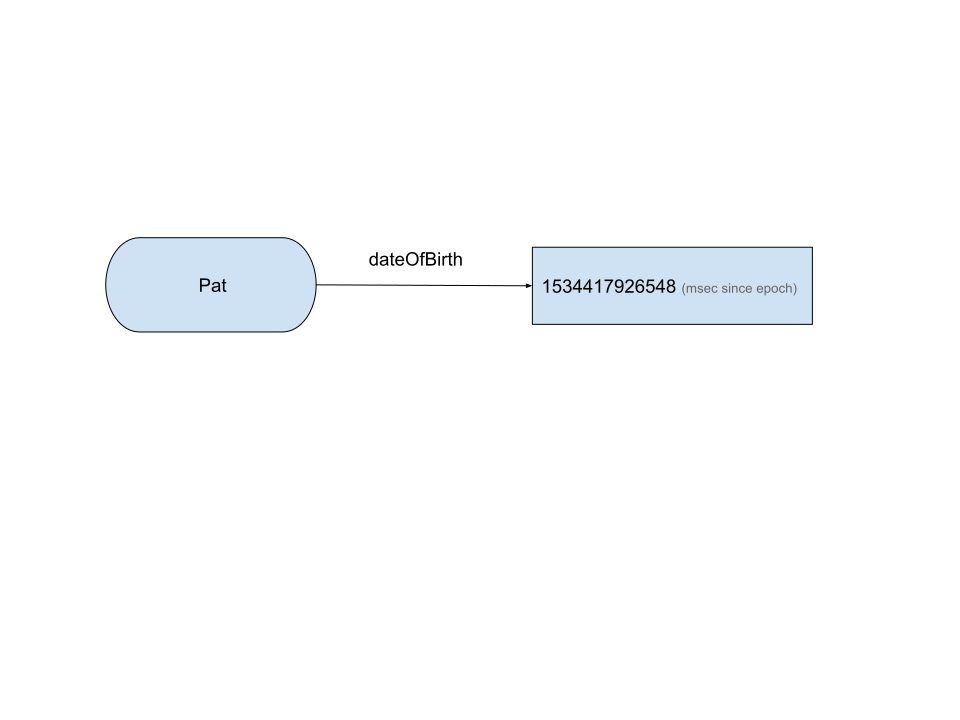
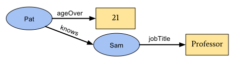
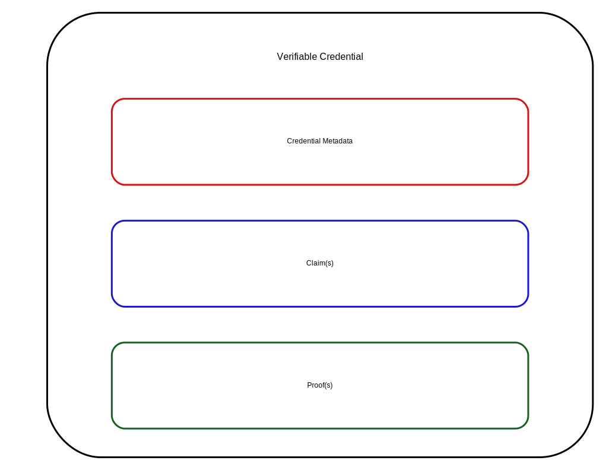
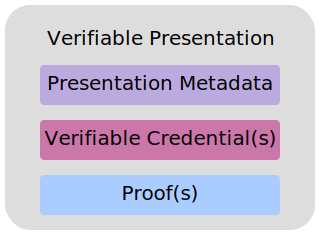
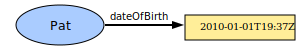

[=Credentials=] are integral to our daily lives; driver's licenses confirm
our capability to operate motor vehicles, university degrees assert our level
of education, and government-issued passports attest to our citizenship when
traveling countries. This specification provides a mechanism to express these
sorts of [=credentials=] on the Web in a cryptographically secure,
privacy-respecting, and machine-verifiable way.
The Working Group is actively seeking implementation feedback for this
specification. In order to exit the Candidate Recommendation phase, the
Working Group has set the requirement of at least two independent
implementations for each mandatory feature in the specification. Please see
the
implementation report for more details.
[=Credentials=] are integral to our daily lives: driver's licenses confirm
our capability to operate motor vehicles, university degrees assert our level
of education, and government-issued passports attest to our citizenship when
traveling between countries. This specification provides a mechanism to express
these sorts of [=credentials=] on the Web in a cryptographically secure,
privacy-respecting, and machine-verifiable way. These [=credentials=] provide
benefits to us when used in the physical world, but their use on the Web
continues to be elusive.
It is currently difficult to express educational qualifications, healthcare
data, financial account details, and other third-party-[=verified=]
personal information in a machine-readable way on the Web. The challenge of
expressing digital [=credentials=] on the Web hinders our ability to receive
the same benefits that physical [=credentials=] provide us in the real world.
This specification standardizes a way of expressing [=credentials=] on the
Web that ensures they are cryptographically secure, privacy-respecting, and
machine-verifiable.
For those unfamiliar with the concepts related to
[=verifiable credentials=], the following sections provide an overview of:
The components that constitute a [=verifiable credential=]
The components that constitute a [=verifiable presentation=]
An ecosystem where [=verifiable credentials=]
and [=verifiable presentations=] are useful
The use cases and requirements that informed this specification can be found
in [[[VC-USE-CASES]]] [[?VC-USE-CASES]].
What is a Verifiable Credential?
In the physical world, a [=credential=] might consist of:
Information related to identifying the [=subject=] of the [=credential=]
(for example, a photo, name, or identification number)
Information related to the issuing authority (for example, a city government,
national agency, or certification body)
Information related to the type of [=credential=] (for example, a
Dutch passport, an American driving license, or a health insurance card)
Information related to specific properties asserted by
the issuing authority about the [=subject=] (for example, nationality,
date of birth, or the classes of vehicle they're qualified to drive)
Evidence by which a [=subject=] was demonstrated to have satisfied the
qualifications required for issuing the [=credential=] (for example,
a measurement, proof of citizenship, or test result)
Information related to constraints on the credential (for example,
validity period, or terms of use).
A [=verifiable credential=] can represent all the same information that a
physical [=credential=] represents. Adding technologies such as
digital signatures can make [=verifiable credentials=] more tamper-evident and
trustworthy than their physical counterparts.
[=Holders=] of [=verifiable credentials=] can generate
[=verifiable presentations=] and then share these
[=verifiable presentations=] with [=verifiers=] to prove they possess
[=verifiable credentials=] with specific characteristics.
Both [=verifiable credentials=] and [=verifiable presentations=] can be
transmitted rapidly, making them more convenient than their physical
counterparts when establishing trust at a distance.
While this specification attempts to improve the ease of expressing digital
[=credentials=], it also aims to balance this goal with several
privacy-preserving goals. The persistence of digital information, and the ease
with which disparate sources of digital data can be collected and correlated,
comprise a privacy concern that the use of [=verifiable=] and easily
machine-readable [=credentials=] threatens to make worse. This document
outlines and attempts to address several of these issues in Section
[[[#privacy-considerations]]]. Examples of how to use this data model
using privacy-enhancing technologies, such as zero-knowledge proofs, are also
provided throughout this document.
The word "verifiable" in the terms [=verifiable credential=] and
[=verifiable presentation=] refers to the characteristic of a [=credential=]
or [=presentation=] as being able to be [=verified=] by a [=verifier=],
as defined in this document. Verifiability of a credential does not imply
the truth of [=claims=] encoded therein. Instead, upon establishing the
authenticity and currency of a [=verifiable credential=] or
[=verifiable presentation=], a [=verifier=] validates the included claims using their own
business rules before relying on them. Such reliance only occurs after
evaluating the issuer, the proof, the subject, and the claims against one or
more verifier policies.
Ecosystem Overview
This section describes the roles of the core actors and the relationships
between them in an ecosystem where one expects [=verifiable credentials=]
to be useful. A role is an abstraction that might be implemented in many
different ways. The separation of roles suggests likely interfaces and
protocols for standardization. This specification introduces the following
roles:
[=holder=]
A role an [=entity=] might perform by possessing one or more [=verifiable
credentials=] and generating [=verifiable presentations=] from them. A holder is
often, but not always, a [=subject=] of the [=verifiable credentials=] they are
holding. Holders store their [=credentials=] in [=credential repositories=].
Example holders include students, employees, and customers.
[=issuer=]
A role an [=entity=] can perform by asserting [=claims=] about one or more
[=subjects=], creating a [=verifiable credential=] from these [=claims=], and
transmitting the [=verifiable credential=] to a [=holder=]. For example, issuers
include corporations, non-profit organizations, trade associations, governments,
and individuals.
[=subject=]
A thing about which [=claims=] are made. Example subjects include human beings,
animals, and things.
[=verifier=]
A role an [=entity=] performs by receiving one or more [=verifiable
credentials=], optionally inside a [=verifiable presentation=] for processing.
Example verifiers include employers, security personnel, and websites.
[=verifiable data registry=]
A role a system might perform by mediating the creation and [=verification=] of
identifiers, [=verification material=], and other relevant data, such as
[=verifiable credential=] schemas, revocation registries, and so on, which might
require using [=verifiable credentials=]. Some configurations might require
correlatable identifiers for [=subjects=]. Some registries, such as ones for
UUIDs and [=verification material=], might just act as namespaces for
identifiers. Examples of verifiable data registries include trusted databases,
decentralized databases, government ID databases, and distributed ledgers. Often,
more than one type of verifiable data registry utilized in an ecosystem.
The roles and information flows forming the basis for this specification.
[[[#roles]]] above provides an example ecosystem to ground the
rest of the concepts in this specification. Other ecosystems exist, such as
protected environments or proprietary systems, where
[=verifiable credentials=] also provide benefits.
This ecosystem contrasts with the typical two-party or federated identity
provider models. An identity provider, sometimes abbreviated as IdP,
is a system for creating, maintaining, and managing identity information for
[=holders=] while providing authentication services to [=relying party=]
applications within a federation or distributed network. In a federated
identity model, the [=holder=] is tightly bound to the identity provider.
This specification avoids using "identity provider," "federated identity," or
"relying party" terminology, except when comparing or mapping these concepts
to other specifications. This specification decouples the identity provider
concept into two distinct concepts: the [=issuer=] and the [=holder=].
In many cases, the [=holder=] of a [=verifiable credential=] is the subject, but
in some instances it is not. For example, a parent (the [=holder=]) might hold
the [=verifiable credentials=] of a child (the [=subject=]), or a pet owner (the
[=holder=]) might hold the [=verifiable credentials=] of their pet (the
[=subject=]). For more information about these exceptional cases, see the
Subject-Holder Relationships section in the [[[VC-IMP-GUIDE]]].
For a deeper exploration of the [=verifiable credentials=] ecosystem and
a concrete lifecycle example, please refer to [[[VC-USE-CASES]]] [[?VC-USE-CASES]].
A conforming document is a
compacted JSON-LD
document that complies with all of the relevant "MUST" statements in this
specification. Specifically, the relevant normative "MUST" statements in
Sections [[[#basic-concepts]]], [[[#advanced-concepts]]], and
[[[#syntaxes]]] of this document MUST be enforced.
A conforming document MUST be either a [=verifiable credential=]
with a media type of `application/vc` or a [=verifiable presentation=]
with a media type of `application/vp`. A conforming document MUST be
secured by at least one securing mechanism as described in Section
[[[#securing-mechanisms]]].
A conforming issuer implementation produces
[=conforming documents=], MUST include all required properties in the
[=conforming documents=] it produces, and MUST secure the [=conforming
documents=] it produces using a securing mechanism described in Section
[[[#securing-mechanisms]]].
A conforming verifier implementation
consumes [=conforming documents=], MUST perform [=verification=] on a
[=conforming document=] as described in Section
[[[#securing-mechanisms]]], MUST check that each
required property satisfies the normative requirements for that property, and
MUST produce errors when non-[=conforming documents=] are detected.
This specification includes both required and optional properties. Optional
properties MAY be ignored by [=conforming issuer implementations=] and
[=conforming verifier implementations=].
This document also contains examples that contain characters that are invalid
JSON, such as inline comments (`//`) and the use of ellipsis
(`...`) to denote information that adds little value to the example.
Implementers are cautioned to remove this content if they desire to use the
information as a valid document.
Examples provided throughout this document include descriptive properties, such as
`name` and `description`, with values in English to simplify the concepts in each
example of the specification. These examples do not necessarily reflect the data
structures needed for international use, described in more detail in
Section [[[#internationalization-considerations]]].
Terminology
The following terms are used to describe concepts in this specification.
claim
An assertion made about a [=subject=].
credential
A set of one or more [=claims=] made by an [=issuer=]. The [=claims=]
in a credential can be about different [=subjects=]. The definition of
credential used in this specification differs from,
NIST's definitions of
credential.
decentralized identifier
A portable URL-based identifier, also known as a DID,
is associated with an [=entity=]. These identifiers are most often used in a
[=verifiable credential=] and are associated with [=subjects=] such that a
[=verifiable credential=] can be easily ported from one
[=credential repository=] to another without reissuing the [=credential=].
An example of a DID is `did:example:123456abcdef`. See the
[[[?DID-CORE]]] specification for further details.
decentralized identifier document
Also referred to as a DID document, this is a document
that is accessible using a [=verifiable data registry=] and contains
information related to a specific [=decentralized identifier=], such as the
associated [=credential repository=] and [=verification material=]. See the
[[[?DID-CORE]]] specification for further details.
default graph
The [=graph=] containing all [=claims=] that are not explicitly part of
a [=named graph=].
digital signature
A mathematical scheme for demonstrating the authenticity of a digital message.
entity
Anything that can be referenced in statements as an abstract or concrete noun.
Entities include but are not limited to people, organizations, physical things,
documents, abstract concepts, fictional characters, and arbitrary text. Any
entity might perform roles in the ecosystem, if it can do so. Note
that some entities fundamentally cannot take actions, for example, the string "abc"
cannot issue credentials.
graph
A set of claims, forming a network of information composed of [=subjects=]
and their relationship to other [=subjects=] or data. Each [=claim=] is
part of a graph; either explicit in the case of [=named graphs=], or
implicit for the [=default graph=].
holder
A role an [=entity=] might perform by possessing one or more
[=verifiable credentials=] and generating [=verifiable presentations=]
from them. A holder is often, but not always, a [=subject=] of the
[=verifiable credentials=] they are holding. Holders store their
[=credentials=] in [=credential repositories=].
issuer
A role an [=entity=] can perform by asserting [=claims=] about one or
more [=subjects=], creating a [=verifiable credential=] from these
[=claims=], and transmitting the [=verifiable credential=] to a
[=holder=].
named graph
A [=graph=] associated with specific properties, such as
`verifiableCredential`. These properties
result in separate [=graphs=] that contain all [=claims=] defined in the
corresponding JSON objects.
presentation
Data derived from one or more [=verifiable credentials=] issued by one or
more [=issuers=] that is shared with a specific [=verifier=].
credential repository
Software, such as a file system, storage vault, or personal [=verifiable
credential=] wallet, that stores and protects access to [=holders'=]
[=verifiable credentials=].
selective disclosure
The ability of a [=holder=] to make fine-grained decisions about what
information to share.
unlinkable disclosure
A type of [=selective disclosure=] where [=presentations=] cannot be correlated
between [=verifiers=].
subject
A thing about which [=claims=] are made.
user agent
A program, such as a browser or other Web client, that mediates the
communication between [=holders=], [=issuers=], and [=verifiers=].
validation
The assurance that a [=claim=] from a specific [=issuer=] satisfies the business
requirements of a [=verifier=] for a particular use. This specification defines
how verifiers verify [=verifiable credentials=] and [=verifiable
presentations=]. It also specifies that [=verifiers=] validate claims in
[=verifiable credentials=] before relying on them. However, the means for such
validation vary widely and are outside the scope of this specification.
[=Verifiers=] trust certain [=issuers=] for certain claims and apply their own
rules to determine which claims in which [=credentials=] are suitable for use by
their systems.
verifiable credential
A tamper-evident [=credential=] whose authorship can be cryptographically
verified. Verifiable credentials can be used to build
[=verifiable presentations=], which can also be cryptographically verifiable.
verifiable data registry
A role a system might perform by mediating the creation and [=verification=]
of identifiers, [=verification material=], and other relevant data, such as
[=verifiable credential=] schemas, revocation registries,
and so on, which might require using [=verifiable credentials=]. Some
configurations might require correlatable identifiers for [=subjects=]. Some
registries, such as ones for UUIDs and [=verification material=], might act
as namespaces for identifiers.
verifiable presentation
A tamper-evident presentation of information encoded in such a way that
authorship of the data can be trusted after a process of cryptographic
verification. Certain types of verifiable presentations might contain data that
is synthesized from, but does not contain, the original [=verifiable credentials=]
(for example, zero-knowledge proofs).
verification
The evaluation of whether a [=verifiable credential=] or [=verifiable
presentation=] is an authentic and current statement of the issuer or presenter,
respectively. This includes checking that the credential or presentation
conforms to the specification, the securing mechanism is satisfied, and, if
present, the status check succeeds. Verification of a credential does not imply
evaluation of the truth of [=claims=] encoded in the credential.
verifier
A role an [=entity=] performs by receiving one or more
[=verifiable credentials=], optionally inside a
[=verifiable presentation=] for processing. Other specifications might refer
to this concept as a relying party.
verification material
Information that is used to verify the security of cryptographically
protected information. For example, a cryptographic public key is used to verify
a digital signature associated with a [=verifiable credential=].
URL
A Uniform Resource Locator, as defined by the [[[URL]]]. URLs can be
dereferenced to result in a resource, such as a document. The rules
for dereferencing, or fetching, a URL are defined by the URL [=url/scheme=].
This specification does not use the term URI or IRI because those terms have
been deemed to be confusing to Web developers.
Core Data Model
The following sections outline core data model concepts, such as [=claims=],
[=credentials=], [=presentations=], [=verifiable credentials=], and
[=verifiable presentations=], which form the foundation of this
specification.
Readers might note that some concepts described in this section, such as
[=credentials=] and [=presentations=], do not have media types defined by
this specification. However, the concepts of a [=verifiable credential=] or a
[=verifiable presentation=] are defined as [=conforming documents=] and
have associated media types. The concrete difference between these concepts
— between [=credential=] and [=presentation=] vs. [=verifiable
credential=] and [=verifiable presentation=] — is simply the fact
that the "verifiable" objects are secured in a cryptographic
way, and the others are not. For more details, see Section
[[[#securing-mechanisms]]].
Claims
A [=claim=] is a statement about a [=subject=]. A [=subject=] is a
thing about which [=claims=] can be made. [=Claims=] are expressed using
subject-
property-value relationships.
The basic structure of a claim.
The data model for [=claims=], illustrated in [[[#basic-structure]]]
above, is powerful and can be used to express a large variety of statements. For
example, whether someone graduated from a particular university can be expressed
as shown in [[[#basic-example]]] below.

A basic claim expressing that Pat is an alum of "Example University".
Individual [=claims=] can be merged together to express a [=graph=] of
information about a [=subject=]. The example shown in
[[[#multiple-claims]]] below extends the previous [=claim=] by
adding the [=claims=] that Pat knows Sam and that Sam is employed as a
professor.

Multiple claims can be combined to express a graph of information.
To this point, the concepts of a [=claim=] and a [=graph=] of information
are introduced. More information is expected to be added to the graph in order
to be able to trust [=claims=], more information is
expected to be added to the graph.
Credentials
A [=credential=] is a set of one or more [=claims=] made by the same [=entity=].
[=Credentials=] might also include an identifier and metadata to describe
properties of the [=credential=], such as the [=issuer=], the validity date and
time period, a representative image, [=verification material=], status
information, and so on. A
[=verifiable credential=] is a set of tamper-evident [=claims=] and metadata
that cryptographically prove who issued it. Examples of [=verifiable
credentials=] include, but are not limited to, digital employee identification
cards, digital driver's licenses, and digital educational certificates.

Basic components of a verifiable credential.
[[[#basic-vc]]] above shows the basic components of a
[=verifiable credential=], but abstracts the details about how [=claims=]
are organized into information [=graphs=], which are then organized into
[=verifiable credentials=].
[[[#info-graph-vc]]] below shows a more complete depiction of a
[=verifiable credential=] using an [=embedded proof=] based on
[[[?VC-DATA-INTEGRITY]]]. It is composed of at least two information [=graphs=].
The first of these information [=graphs=], the [=verifiable credential graph=]
(the [=default graph=]), expresses the [=verifiable credential=]
itself through [=credential=] metadata and other [=claims=]. The second
information [=graph=], referred to by the `proof` property, is the
proof graph of the [=verifiable credential=] and is a separate
[=named graph=]. The [=proof graph=] expresses the digital proof, which, in this
case, is a digital signature. Readers who are interested in the need for
multiple information graphs can refer to Section
[[[#verifiable-credential-graphs]]].
Information graphs associated with a basic verifiable credential, using an [=embedded proof=]
based on [[[VC-DATA-INTEGRITY]]] [[?VC-DATA-INTEGRITY]].
[[[#info-graph-vc-jwt]]] below shows the same [=verifiable credential=]
as [[[#info-graph-vc]]], but secured using JOSE [[?VC-JOSE-COSE]]. The
payload contains a single information graph, which is the [=verifiable
credential graph=] containing [=credential=] metadata and other [=claims=].
Information graphs associated with a basic verifiable credential, using an [=enveloping proof=]
based on [[[VC-JOSE-COSE]]] [[?VC-JOSE-COSE]].
Presentations
Enhancing privacy is a key design feature of this specification. Therefore, it
is crucial for [=entities=] using this technology to express only
the portions of their personas that are appropriate for given situations. The
expression of a subset of one's persona is called a [=verifiable presentation=].
Examples of different personas include a person's professional persona,
online gaming persona, family persona, or incognito persona.
A [=verifiable presentation=] is created by a
[=holder=], can express data from multiple [=verifiable credentials=], and can
contain arbitrary additional data. They are used to present [=claims=] to a
[=verifier=]. It is also possible to present [=verifiable credentials=]
directly.
The data in a [=presentation=] is often about the same [=subject=] but might
have been issued by multiple [=issuers=]. The aggregation of this information
expresses an aspect of a person, organization, or [=entity=].

Basic components of a verifiable presentation.
[[[#basic-vp]]] above shows the components of a
[=verifiable presentation=] but abstracts the details about how
[=verifiable credentials=] are organized into information [=graphs=],
which are then organized into [=verifiable presentations=].
[[[#info-graph-vp]]] below shows a more complete depiction of a
[=verifiable presentation=] using an [=embedded proof=]
based on [[[?VC-DATA-INTEGRITY]]].
It is composed of at least four information [=graphs=].
The first of these information [=graphs=], the [=verifiable presentation graph=]
(the [=default graph=]), expresses the [=verifiable presentation=]
itself through [=presentation=] metadata.
The [=verifiable presentation=] refers, via the `verifiableCredential` property,
to a [=verifiable credential=].
This [=credential=] is a self-contained [=verifiable credential graph=]
containing [=credential=] metadata and other [=claims=]. This [=credential=]
refers to a [=verifiable credential=] [=proof graph=] via a `proof` property,
expressing the proof (usually a digital signature) of the [=credential=].
This [=verifiable credential graph=] and its linked [=proof graph=] constitute
the second and third information [=graphs=], respectively, and each is a
separate [=named graph=]. The [=presentation=] also refers, via the `proof`
property, to the [=presentation=]'s [=proof graph=], the fourth information
[=graph=] (another [=named graph=]). This [=presentation=] [=proof graph=]
represents the digital signature of the [=verifiable presentation graph=],
the [=verifiable credential graph=], and the [=proof graph=] linked from the
[=verifiable credential graph=].
Information [=graphs=] associated with a basic [=verifiable presentation=] that
uses an [=embedded proof=] based on [[[VC-DATA-INTEGRITY]]].
[[[#info-graph-vp-jwt]]] below shows the same [=verifiable
presentation=] as [[[#info-graph-vp]]], but using an [=enveloping
proof=] based on [[?VC-JOSE-COSE]]. The payload contains only two information
graphs: the [=verifiable presentation graph=] expressing the [=verifiable
presentation=] through presentation metadata and the corresponding
[=verifiable credential graph=], referred to by the `verifiableCredential`
property. The [=verifiable credential graph=] contains a single
`EnvelopedVerifiableCredential`
instance referring, via a `data:` URL [[RFC2397]], to the verifiable credential
secured via an [=enveloping proof=] shown in [[[#info-graph-vc-jwt]]].
Information graphs associated with a basic [=verifiable presentation=] that is
using an [=enveloping proof=] based on [[[?VC-JOSE-COSE]]]. The `data:` URL
refers to the [=verifiable credential=] shown in
[[[#info-graph-vc-jwt]]].
It is possible to have a [=presentation=], such as a collection of university
credentials, which draws on multiple [=credentials=] about different [=subjects=]
that are often, but not required to be, related. This is achieved by using the
`verifiableCredential` property to refer to multiple [=verifiable credentials=].
See Appendix [[[#additional-diagrams-for-verifiable-presentations]]] for more
details.
As described in Section [[[#ecosystem-overview]]], an [=entity=] can take
on one or more roles as they enter a particular credential exchange.
While a [=holder=] is typically expected to generate [=presentations=], an
[=issuer=] or [=verifier=] might generate a presentation to identify itself
to a [=holder=]. This might occur if the [=holder=] needs higher assurance
from the [=issuer=] or [=verifier=] before handing over sensitive information
as part of a [=verifiable presentation=].
Basic Concepts
This section introduces some basic concepts for the specification in
preparation for Section [[[#advanced-concepts]]] later in the
document.
Getting Started
This specification is designed to ease the prototyping of new types of
[=verifiable credentials=]. Developers can copy the template below and paste it
into common [=verifiable credential=] tooling to start issuing, holding, and
verifying prototype credentials.
A developer will change `MyPrototypeCredential` below to the type of credential
they would like to create. Since [=verifiable credentials=] talk about subjects,
each property-value pair in the `credentialSubject` object expresses a
particular property of the credential subject. Once a developer has added a
number of these property-value combinations, the modified object can be sent to
a [=conforming issuer implementation=], and a [=verifiable credential=] will be
created for the developer. From a prototyping standpoint, that is all a
developer needs to do.
After stabilizing all credential properties, developers are advised to generate
and publish vocabulary and context files at stable URLs to facilitate
interoperability with other developers. The
`https://www.w3.org/ns/credentials/examples/v2` URL above
would then be replaced with the URL of a use-case-specific context. This
process is covered in Section [[[#extensibility]]]. Alternatively,
developers can reuse existing vocabulary and context files that happen to fit
their use case. They can explore the [[[VC-EXTENSIONS]]]
for reusable resources.
Verifiable Credentials
[=Verifiable credentials=] are used to express properties of one or more
[=subjects=] as well as properties of the [=credential=] itself. The following
properties are defined in this specification for a [=verifiable credential=]:
@context
Defined in Section [[[#contexts]]].
id
Defined in Section [[[#identifiers]]].
type
Defined in Section [[[#types]]].
name
Defined in Section [[[#names-and-descriptions]]].
description
Defined in Section [[[#names-and-descriptions]]].
issuer
Defined in Section [[[#issuer]]].
credentialSubject
Defined in Section [[[#credential-subject]]].
validFrom
Defined in Section [[[#validity-period]]].
validUntil
Defined in Section [[[#validity-period]]].
status
Defined in Section [[[#status]]].
credentialSchema
Defined in Section [[[#data-schemas]]].
refreshService
Defined in Section [[[#refreshing]]].
termsOfUse
Defined in Section [[[#terms-of-use]]].
evidence
Defined in Section [[[#evidence]]].
A [=verifiable credential=] can be extended to have additional properties
through the extension mechanism defined in Section [[[#extensibility]]].
Contexts
When two software systems need to exchange data, they need to use terminology
that both systems understand. Consider how two people communicate effectively
by using the same language, where the words they use, such as "name" and
"website," mean the same thing to each individual. This is sometimes referred
to as the context of a conversation. This specification uses a similar
concept to achieve similar results for software systems by establishing a
context in which to communicate.
Software systems that process [=verifiable credentials=] and [=verifiable
presentations=] identify terminology by using [=URLs=] for each term. However,
those [=URLs=] can be long and not very human-friendly, while short-form,
human-friendly aliases can be more helpful. This specification uses the
`@context` [=property=] to map short-form aliases to the [=URLs=].
[=Verifiable credentials=] and [=verifiable presentations=] MUST include a
`@context` [=property=]. Application developers MUST understand every JSON-LD
context used by their application, at least to the extent that it affects the
meaning of the terms used by their application. One mechanism for
doing so is described in the Section on
Validating Contexts in
the [[[VC-DATA-INTEGRITY]]] specification. Other specifications that build
upon this specification MAY require that JSON-LD contexts be integrity protected
by using the `relatedResource` feature described in Section
[[[#integrity-of-related-resources]]] or any effectively equivalent mechanism.
@context
The value of the `@context` [=property=] MUST be an [=ordered set=]
where the first item is a [=URL=] with the value
`https://www.w3.org/ns/credentials/v2`.
Subsequent items in the [=ordered set=] MUST be composed of any combination of
[=URLs=] and objects, where each is processable as a
JSON-LD Context.
The example above uses the base context [=URL=]
(`https://www.w3.org/ns/credentials/v2`) to establish that the data exchange is
about a [=verifiable credential=]. This concept is further detailed in
Section [[[#extensibility]]]. The data available at
`https://www.w3.org/ns/credentials/v2` is a permanently cacheable static
document with instructions for processing it provided in Appendix
[[[#base-context]]]. The associated human-readable vocabulary document for the
Verifiable Credentials Data Model is available at
https://www.w3.org/2018/credentials/.
The second [=URL=] (`https://www.w3.org/ns/credentials/examples/v2`) is used to
demonstrate examples. Implementations are expected to not use
this [=URL=] for any other purpose, such as in pilot or production systems.
The `@context` [=property=] is further elaborated upon in
Section 3.1: The Context
of the [[[JSON-LD11]]] specification.
Identifiers
When expressing statements about a specific thing, such as a person, product, or
organization, using a globally unique identifier for that thing can be useful.
Globally unique identifiers enable others to express statements
about the same thing. This specification defines the optional `id`
[=property=] for such identifiers. The `id` [=property=]
allows for expressing statements about specific things in the
[=verifiable credential=] and is set by an [=issuer=] when expressing
objects in a [=verifiable credential=] or a [=holder=] when expressing
objects in a [=verifiable presentation=]. The `id` [=property=] expresses an
identifier that others are expected to use when expressing statements about the
specific thing identified by that identifier. Example `id` values
include UUIDs (`urn:uuid:0c07c1ce-57cb-41af-bef2-1b932b986873`), HTTP URLs
(`https://id.example/things#123`), and DIDs (`did:example:1234abcd`).
Developers are reminded that identifiers might be harmful
when pseudonymity is required. When considering such scenarios, developers are
encouraged to read Section [[[#identifier-based-correlation]]] carefully
There are also other types of access and correlation mechanisms documented
in Section [[[#privacy-considerations]]] that create privacy concerns.
Where privacy is a vital consideration, it is permissible to omit the
`id` [=property=]. Some use cases do not need or explicitly need to omit,
the `id` [=property=]. Similarly, special attention is to be given to the choice between
publicly resolvable URLs and other forms of identifiers. Publicly resolvable URLs can
facilitate ease of verification and interoperability, yet they might also inadvertently
grant access to potentially sensitive information if not used judiciously.
id
The `id` [=property=] is OPTIONAL. If present, `id` [=property=]'s value
MUST be a single [=URL=], which MAY be dereferenceable. It is
RECOMMENDED that the [=URL=] in the `id` be one which, if dereferenceable, results
in a document containing machine-readable information about the `id`.
The example above uses two types of identifiers. The first identifier is for
the [=verifiable credential=] and uses an HTTP-based URL. The second
identifier is for the [=subject=] of the [=verifiable credential=] (the
thing the [=claims=] are about) and uses a [=decentralized identifier=],
also known as a [=DID=].
[=DIDs=] are a type of identifier which are not necessary for [=verifiable
credentials=] to be useful. Specifically, [=verifiable credentials=] do not
depend on [=DIDs=] and [=DIDs=] do not depend on [=verifiable credentials=].
However, many [=verifiable credentials=] will use [=DIDs=], and software
libraries implementing this specification will need to resolve [=DIDs=].
[=DID=]-based URLs are used to express identifiers associated with
[=subjects=], [=issuers=], [=holders=], credential status lists, cryptographic
keys, and other machine-readable information associated with a [=verifiable
credential=].
Types
Software systems that process the kinds of objects specified in this document
use type information to determine whether or not a provided
[=verifiable credential=] or [=verifiable presentation=] is appropriate
for the intended use-case. This specification defines a `type`
[=property=] for expressing object type information. This type
information can be used during [=validation=] processes, as described in Appendix
[[[#validation]]].
[=Verifiable credentials=] and [=verifiable presentations=] MUST contain a
`type` [=property=] with an associated value.
type
The value of the `type` [=property=] MUST be one or more
terms and
absolute URL strings. If more than
one value is provided, the order does not matter.
Concerning this specification, the following table lists the objects that
MUST have a [=type=] specified.
Object
Type
[=Verifiable credential=] object
`VerifiableCredential` and, optionally, a more specific
[=verifiable credential=] [=type=]. For example,
`"type": ["VerifiableCredential", "OpenBadgeCredential"]`
[=Verifiable presentation=] object
`VerifiablePresentation` and, optionally, a more specific
[=verifiable presentation=] [=type=]. For example,
`"type": "VerifiablePresentation"`
A valid credentialSchema [=type=]. For example,
`"type": "JsonSchema"`
The [=type=] system for the Verifiable Credentials Data Model is the same as
for [[[JSON-LD11]]] and is detailed in
Section 3.5:
Specifying the Type and
Section 9: JSON-LD
Grammar. When using a JSON-LD context (see Section
[[[#extensibility]]]), this specification aliases the
`@type` keyword to `type` to make the JSON-LD documents
more easily understood. While application developers and document authors do
not need to understand the specifics of the JSON-LD type system, implementers
of this specification who want to support interoperable extensibility do.
All [=credentials=], [=presentations=], and encapsulated objects SHOULD
specify, or be associated with, additional, more narrow [=types=] (like
`ExampleDegreeCredential`, for example) so software systems can
more easily detect and process this additional information.
When processing encapsulated objects defined in this specification, such as
objects associated with the `credentialSubject` object or deeply nested therein,
software systems SHOULD use the [=type=] information specified in encapsulating
objects higher in the hierarchy. Specifically, an encapsulating object, such as
a [=credential=], SHOULD convey the associated object [=types=] so that
[=verifiers=] can quickly determine the contents of an associated object based
on the encapsulating object [=type=].
For example, a [=credential=] object with the `type` of
`ExampleDegreeCredential`, signals to a [=verifier=] that the
object associated with the `credentialSubject` property contains the
identifier for the:
[=Subject=] in the `id` property.
Type of degree in the `type` property.
Title of the degree in the `name` property.
This enables implementers to rely on values associated with the `type` property
for [=verification=]. Object types and their associated values are
expected to be documented in at least a human-readable specification that can
be found at the [=URL=] for the type. For example, the human-readable
definition for the `BitstringStatusList` type can be found at
https://www.w3.org/ns/credentials/status/#BitstringStatusList. It is also
suggested that a
machine-readable version be provided through HTTP content negotiation at
the same URL.
Explaining how to create a new type of [=verifiable credential=] is beyond
the scope of this specification. Readers interested in doing so are
advised to read the
Creating New Credential Types section in the [[[?VC-IMP-GUIDE]]].
Names and Descriptions
When displaying a [=credential=], it can be helpful to have
text provided by the [=issuer=] that furnishes the
[=credential=] with a name and a short description of its
purpose. The `name` and `description` [=properties=]
serve these purposes.
name
An OPTIONAL property that expresses the name of the [=credential=]. If
present, the value of the `name` [=property=] MUST be a string or
a language value object as described in
[[[#language-and-base-direction]]]. Ideally, the name of a
[=credential=] is concise, human-readable, and could enable an individual to
quickly differentiate one [=credential=] from any other [=credentials=]
they might hold.
description
An OPTIONAL property that conveys specific details about a [=credential=]. If
present, the value of the `description` [=property=] MUST be a
string or a language value object as described in
[[[#language-and-base-direction]]]. Ideally, the description of a
[=credential=] is no more than a few sentences in length and conveys enough
information about the [=credential=] to remind an individual of its contents
without having to look through the entirety of the [=claims=].
{
"@context": [
"https://www.w3.org/ns/credentials/v2",
"https://www.w3.org/ns/credentials/examples/v2"
],
"id": "http://university.example/credentials/3732",
"type": ["VerifiableCredential", "ExampleDegreeCredential"],
"issuer": {
"id": "https://university.example/issuers/565049",
"name": "Example University",
"description": "A public university focusing on teaching examples."
},
"validFrom": "2015-05-10T12:30:00Z",
"name": "Example University Degree",
"description": "2015 Bachelor of Science and Arts Degree",
"credentialSubject": {
"id": "did:example:ebfeb1f712ebc6f1c276e12ec21",
"degree": {
"type": "ExampleBachelorDegree",
"name": "Bachelor of Science and Arts"
}
}
}
Names and descriptions also support expressing content in different languages.
To express a string with language and [=base direction=] information,
one can use an object that contains the `@value`, `@language`, and `@direction`
properties to express the text value, language tag, and base direction,
respectively. See
[[[#language-and-base-direction]]] for further information.
The `@direction` property in the examples below is not required
for the associated single-language strings, as their default directions are the
same as those set by the `@direction` value. We include the `@direction` property here
for clarity of demonstration and to make copy+paste+edit deliver functional
results. Implementers are encouraged to read the section on
String Internationalization
in the [[[JSON-LD11]]] specification.
{
"@context": [
"https://www.w3.org/ns/credentials/v2",
"https://www.w3.org/ns/credentials/examples/v2"
],
"id": "http://university.example/credentials/3732",
"type": ["VerifiableCredential", "ExampleDegreeCredential"],
"issuer": {
"id": "https://university.example/issuers/565049",
"name": [{
"@value": "Example University",
"@language": "en"
}, {
"@value": "Université Exemple",
"@language": "fr"
}, {
"@value": "جامعة المثال",
"@language": "ar",
"@direction": "rtl"
}],
"description": [{
"@value": "A public university focusing on teaching examples.",
"@language": "en"
}, {
"@value": "Une université publique axée sur l'enseignement d'exemples.",
"@language": "fr"
}, {
"@value": ".جامعة عامة تركز على أمثلة التدريس",
"@language": "ar",
"@direction": "rtl"
}]
},
"validFrom": "2015-05-10T12:30:00Z",
"name": [{
"@value": "Example University Degree",
"@language": "en"
}, {
"@value": "Exemple de Diplôme Universitaire",
"@language": "fr"
}, {
"@value": "مثال الشهادة الجامعية",
"@language": "ar",
"@direction": "rtl"
}],
"description": [{
"@value": "2015 Bachelor of Science and Arts Degree",
"@language": "en"
}, {
"@value": "2015 Licence de Sciences et d'Arts",
"@language": "fr"
}, {
"@value": "2015 بكالوريوس العلوم والآداب",
"@language": "ar",
"@direction": "rtl"
}],
"credentialSubject": {
"id": "did:example:ebfeb1f712ebc6f1c276e12ec21",
"degree": {
"type": "ExampleBachelorDegree",
"name": [{
"@value": "Bachelor of Science and Arts Degree",
"@language": "en"
}, {
"@value": "Licence de Sciences et d'Arts",
"@language": "fr"
}, {
"@value": "بكالوريوس العلوم والآداب",
"@language": "ar",
"@direction": "rtl"
}]
}
}
}
Issuer
This specification defines a property for expressing the [=issuer=] of
a [=verifiable credential=].
A [=verifiable credential=] MUST have an `issuer` [=property=].
issuer
The value of the `issuer` [=property=] MUST be either a
[=URL=] or an object containing an `id` [=property=]
whose value is a [=URL=]; in either case, the issuer selects this
[=URL=] to identify itself in a globally unambiguous
way. It is RECOMMENDED that the [=URL=] be one which, if dereferenced, results
in a controller document, as defined in [[CONTROLLER-DOCUMENT]], about the
[=issuer=] that can be used to [=verify=] the information expressed in the
[=credential=].
The value of the `issuer` [=property=] can also be a JWK (for
example, `"https://jwk.example/keys/foo.jwk"`) or a [=DID=] (for
example, `"did:example:abfe13f712120431c276e12ecab"`).
Credential Subject
A [=verifiable credential=] contains [=claims=] about one or more [=subjects=].
This specification defines a `credentialSubject` [=property=] for the expression
of [=claims=] about one or more [=subjects=].
A [=verifiable credential=] MUST contain a `credentialSubject` [=property=].
credentialSubject
The value of the `credentialSubject` [=property=] is a set of objects where each
object MUST be the [=subject=] of one or more [=claims=], which MUST be
serialized inside the `credentialSubject` [=property=]. Each object MAY also
contain an `id` [=property=] to identify the [=subject=], as described in
Section [[[#identifiers]]].
Expressing information related to multiple [=subjects=] in a
[=verifiable credential=] is possible. The example below specifies two
[=subjects=] who are spouses. Note the use of array notation to associate
multiple [=subjects=] with the `credentialSubject` property.
This specification defines the `validFrom` [=property=] to help an
issuer to express the date and time when a [=credential=] becomes valid and
the `validUntil` [=property=] to express the date and time
when a [=credential=] ceases to be valid.
When comparing dates and times, the calculation is done "temporally",
meaning that the string value is converted to a "temporal value" which exists
as a point on a timeline. Temporal comparisons are then performed by checking
to see where the date and time being compared are in relation to
a particular point on the timeline.
validFrom
If present, the value of the `validFrom` [=property=] MUST be a
[XMLSCHEMA11-2]
`dateTimeStamp` string value representing the date and time the
[=credential=] becomes valid, which could be a date and time in the future or
the past. Note that this value represents the earliest point in time at which
the information associated with the `credentialSubject`
[=property=] becomes valid. If a `validUntil` value also exists, the
`validFrom` value MUST express a point in time that is temporally the same or earlier
than the point in time expressed by the `validUntil` value.
validUntil
If present, the value of the `validUntil` [=property=] MUST be a
[XMLSCHEMA11-2]
`dateTimeStamp` string value representing the date and time the
[=credential=] ceases to be valid, which could be a date and time in the past
or the future. Note that this value represents the latest point in time at
which the information associated with the `credentialSubject`
[=property=] is valid. If a `validFrom` value also exists, the `validUntil`
value MUST express a point in time that is temporally the same or later than the
point in time expressed by the `validFrom` value.
If `validFrom` and `validUntil` are not present, the
[=verifiable credential=] validity period is considered valid
indefinitely. In such cases, the [=verifiable credential=] is assumed to be
valid from the time the `verifiable credential` was created.
Status
This specification defines the
credentialStatus [=property=] for
discovering information related to the status of a [=verifiable
credential=], such as whether it is suspended or revoked.
If present, the value associated with the `credentialStatus` [=property=] is a
single object or a set of one or more objects. The following [=properties=]
are defined for every object:
id
The `id` [=property=] is OPTIONAL. It MAY be used to provide a
unique identifier for the credential status object. If present, the
normative guidance in Section [[[#identifiers]]] MUST be followed.
type
The `type` [=property=] is REQUIRED. It is used to express the
type of status information expressed by the object. The related normative
guidance in Section [[[#types]]] MUST be followed.
The precise content of the [=credential=] status information is determined by
the specific `credentialStatus` [=type=] definition and varies
depending on factors such as whether it is simple to implement or if it is
privacy-enhancing. The value will provide enough information to determine the
current status of the [=credential=] and whether machine-readable information will
be retrievable from the URL. For example, the object could contain a link to an
external document that notes whether the [=credential=] is suspended or revoked.
Implementers are cautioned that [=credentials=] with multiple status entries
might contain conflicting information. Reconciling such conflicts is a part of
the [=validation=] process, hence part of the verifier's business logic, and
therefore out of scope for this specification.
Defining the data model, formats, and protocols for status schemes is out of the
scope of this specification. The [[[?VC-EXTENSIONS]]] document contains
available status schemes for implementers who want to implement [=verifiable
credential=] status checking.
Credential status specifications MUST NOT enable tracking of individuals, such
as an [=issuer=] being notified (either directly or indirectly) when a
[=verifier=] is interested in a specific [=holder=] or [=subject=]. Unacceptable
approaches include "phoning home," such that every use of a credential contacts
the [=issuer=] of the credential to check the status for a specific individual,
or "pseudonymity reduction," such that every use of the credential causes a
request for information from the [=issuer=] that the [=issuer=] can use
to deduce [=verifier=] interest in a specific individual.
Data Schemas
Data schemas are useful when enforcing a specific structure on a given
data collection. There are at least two types of data schemas that this
specification considers:
Data verification schemas, which are used to establish that the structure
and contents of a [=credential=] or [=verifiable credential=] conform to a
published schema.
Data encoding schemas, which are used to map the contents of a
[=verifiable credential=] to an alternative representation format, such as a
format used in a zero-knowledge proof.
It is important to understand that data schemas serve a different purpose from
the `@context` property, which neither enforces data structure or
data syntax nor enables the definition of arbitrary encodings to alternate
representation formats.
This specification defines the following [=property=] for expressing a
data schema, which an [=issuer=] can include in the [=verifiable credentials=]
that it issues:
credentialSchema
The value of the `credentialSchema` [=property=] MUST be one or
more data schemas that provide [=verifiers=] with enough information to
determine whether the provided data conforms to the provided schema(s). Each
`credentialSchema` MUST specify its `type` (for example,
`JsonSchema`) and an `id` [=property=]
that MUST be a [=URL=] identifying the schema file. The specific type
definition determines the precise contents of each data schema.
If multiple schemas are present, validity is determined according to the
processing rules outlined by each associated `type` property.
The `credentialSchema` [=property=] allows one to
annotate type definitions or lock them to specific versions of the vocabulary.
Authors of [=verifiable credentials=] can include a static version of their
vocabulary using `credentialSchema` that is secured by some content
integrity protection mechanism. The `credentialSchema`
[=property=] also makes it possible to perform syntactic checking on the
[=credential=] and to use [=verification=] mechanisms such as JSON Schema
[[?VC-JSON-SCHEMA]] validation.
In the example above, the [=issuer=] is specifying two `credentialSchema`
objects, each of which point to a JSON Schema [[?VC-JSON-SCHEMA]] file that a
[=verifier=] can use to determine whether the [=verifiable credential=] is
well-formed.
Securing Mechanisms
This specification recognizes two classes of
securing mechanisms:
those that use enveloping proofs and those that use embedded proofs.
An enveloping proof wraps a serialization
of this data model. One such RECOMMENDED enveloping proof mechanism is defined
in [[[VC-JOSE-COSE]]] [[VC-JOSE-COSE]].
An embedded proof is a mechanism where the proof is
included in the serialization of the data model. One such RECOMMENDED embedded
proof mechanism is defined in [[[VC-DATA-INTEGRITY]]] [[VC-DATA-INTEGRITY]].
These two classes of securing mechanisms are not mutually exclusive. Additional
securing mechanism specifications might also be defined according to the rules
in Section [[[#securing-mechanism-specifications]]].
The [=embedded proof=] above secures the original [=credential=] by decorating
the original data with a digital signature via the `proof` property. This
results in a [=verifiable credential=] that is easy to manage in modern
programming environments and database systems.
The [=enveloping proof=] above secures the original [=credential=] by
encapsulating the original data in a digital signature envelope, resulting in a
[=verifiable credential=] that can be processed using tooling that understands
the SD-JWT format.
Verifiable Presentations
[=Verifiable presentations=] MAY be used to aggregate information from
multiple [=verifiable credentials=].
[=Verifiable presentations=] SHOULD be extremely short-lived and bound to a
challenge provided by a [=verifier=]. Details for accomplishing this depend
on the securing mechanism, the transport protocol, and [=verifier=] policies.
Unless additional requirements are defined by the particular securing mechanism
or embedding protocol, a [=verifier=] cannot generally assume that the
[=verifiable presentation=] correlates with the presented
[=verifiable credentials=].
The [=default graph=] of a [=verifiable presentation=] is also referred to
as the verifiable presentation graph.
The following properties are defined for a [=verifiable presentation=]:
|id|
The `id` [=property=] is optional. It MAY be used to provide a
unique identifier for the [=verifiable presentation=]. If present, the
normative guidance in Section [[[#identifiers]]] MUST be followed.
|type|
The `type` [=property=] MUST be present. It is used to express the
type of [=verifiable presentation=]. One value of this property MUST be
`VerifiablePresentation`, but additional types MAY be included. The
related normative guidance in Section [[[#types]]] MUST be followed.
verifiableCredential
The `verifiableCredential` [=property=] MAY be present. The value
MUST be one or more [=verifiable credential=] and/or
enveloped verifiable credential
objects (the values MUST NOT be non-object values such as
numbers, strings, or URLs). These objects are called
verifiable credential graphs and
MUST express information that is secured using a
securing mechanism.
See Section [[[#verifiable-credential-graphs]]] for further details.
holder
The [=verifiable presentation=] MAY include a `holder`
[=property=]. If present, the value MUST be either a [=URL=] or an object
containing an `id` [=property=]. It is RECOMMENDED that the
[=URL=] in the `holder` or its `id` be one which, if
dereferenced, results in a document containing machine-readable information
about the [=holder=] that can be used to [=verify=] the information
expressed in the [=verifiable presentation=].
If the `holder` [=property=] is absent, information about the
[=holder=] is obtained either via the securing mechanism or
does not pertain to the [=validation=] of the [=verifiable presentation=].
The example below shows a [=verifiable presentation=]:
The contents of the `verifiableCredential` [=property=] shown
above are verifiable credential
graphs, as described by this specification.
Enveloped Verifiable Credentials
It is possible for a [=verifiable presentation=] to include one or more
[=verifiable credentials=] that have been secured using a securing mechanism
that "envelopes" the payload, such as [[[?VC-JOSE-COSE]]] [[?VC-JOSE-COSE]].
This can be accomplished by associating the `verifiableCredential` property with
an object that has a `type` of `EnvelopedVerifiableCredential`.
EnvelopedVerifiableCredential
They are used to associate an object containing an enveloped
[=verifiable credential=] with the `verifiableCredential` property in a
[=verifiable presentation=]. The `@context` property of the object MUST be
present and include a context, such as the base context
for this specification, that defines at least the `id`, `type`, and
`EnvelopedVerifiableCredential` terms as defined by the base context provided
by this specification. The `id` value of the object MUST be a `data:` URL
[[RFC2397]] that expresses a secured [=verifiable credential=] using an
enveloping security scheme, such as
[[[VC-JOSE-COSE]]] [[VC-JOSE-COSE]]. The `type` value of the object MUST be
`EnvelopedVerifiableCredential`.
The example below shows a [=verifiable presentation=] that contains an
enveloped [=verifiable credential=]:
It is possible that an implementer might want to process the object described in
this section and the enveloped presentation expressed by the `id` value in an
RDF environment and create linkages between the objects that are relevant to
RDF. The desire and mechanisms for doing so are use case dependent and will,
thus, be implementation dependent.
Enveloped Verifiable Presentations
It is possible to express a [=verifiable presentation=] that has been secured
using a mechanism that "envelops" the payload, such as
[[[?VC-JOSE-COSE]]] [[?VC-JOSE-COSE]]. This can be accomplished by using an
object that has a `type` of `EnvelopedVerifiablePresentation`.
EnvelopedVerifiablePresentation
Used to express an enveloped [=verifiable presentation=].
The `@context` property of the object MUST be present and include a context,
such as the base context for this specification,
that defines at least the `id`, `type`, and `EnvelopedVerifiablePresentation`
terms as defined by the base context provided by this specification. The `id`
value of the object MUST be a `data:` URL [[RFC2397]] that expresses a secured
[=verifiable presentation=] using an
enveloping securing mechanism, such as
[[[VC-JOSE-COSE]]] [[VC-JOSE-COSE]]. The `type` value of the object MUST be
`EnvelopedVerifiablePresentation`.
The example below shows an enveloped [=verifiable presentation=]:
Some zero-knowledge cryptography schemes might enable [=holders=] to
indirectly prove they hold [=claims=] from a [=verifiable credential=]
without revealing all claims in that [=verifiable credential=]. In these
schemes, a [=verifiable credential=] might be used to derive presentable
data, which is cryptographically asserted such that a [=verifier=] can trust
the value if they trust the [=issuer=].
Some selective disclosure schemes can share a subset of [=claims=]
derived from a [=verifiable credential=].
For an example of a ZKP-style [=verifiable presentation=] containing
derived data instead of directly embedded [=verifiable credentials=], see
Section [[[#zero-knowledge-proofs]]].

A basic claim expressing that Pat is over the age of 21.
Presentations Including Holder Claims
A [=holder=] MAY use the `verifiableCredential` [=property=] in
a [=verifiable presentation=] to include [=verifiable credentials=] from
any [=issuer=], including themselves. When the [=issuer=] of a
[=verifiable credential=] is the [=holder=], the [=claims=] in that
[=verifiable credential=] are considered self-asserted.
Such self-asserted claims can be secured by the same mechanism that secures
the [=verifiable presentation=] in which they are included or by any
mechanism usable for other [=verifiable credentials=].
The subject(s) of these self-asserted [=claims=]
are not limited, so these [=claims=] can include statements about the
[=holder=], one of the other included [=verifiable credentials=] or even
the [=verifiable presentation=] in which the self-asserted [=verifiable
credential=] is included. In each case, the `id` [=property=]
is used to identify the specific [=subject=], in the object where the
[=claims=] about it are made, just as it is done in
[=verifiable credentials=] that are not self-asserted.
A [=verifiable presentation=] that includes a self-asserted
[=verifiable credential=], which is secured only using the same mechanism as
the [=verifiable presentation=], MUST include a `holder`
[=property=].
All of the normative requirements defined for [=verifiable credentials=]
apply to self-asserted [=verifiable credentials=].
When a self-asserted [=verifiable credential=] is secured using the same
mechanism as the [=verifiable presentation=], the value of the
`issuer` [=property=] of the [=verifiable credential=]
MUST be identical to the `holder` [=property=] of the
[=verifiable presentation=].
The example below shows a [=verifiable presentation=] that embeds a
self-asserted [=verifiable credential=] that is secured using the same
mechanism as the [=verifiable presentation=].
The example below shows a [=verifiable presentation=] that embeds a
self-asserted [=verifiable credential=] holding [=claims=] about the
[=verifiable presentation=]. It is secured using the same mechanism as the
[=verifiable presentation=].
{
"@context": [
"https://www.w3.org/ns/credentials/v2",
"https://www.w3.org/ns/credentials/examples/v2"
],
"type": ["VerifiablePresentation", "ExamplePresentation"],
"id": "urn:uuid:313801ba-24b7-11ee-be02-ff560265cf9b",
"holder": "did:example:12345678",
"verifiableCredential": [{
"@context": "https://www.w3.org/ns/credentials/v2",
"type": ["VerifiableCredential", "ExampleAssertCredential"],
"issuer": "did:example:12345678",
"credentialSubject": {
"id": "urn:uuid:313801ba-24b7-11ee-be02-ff560265cf9b",
"assertion": "This VP is submitted by the subject as evidence of a legal right to drive"
},
"proof": { ... }
}],
"proof": { ... }
}
Advanced Concepts
Building on the concepts introduced in Section [[[#basic-concepts]]],
this section explores more complex topics about [=verifiable credentials=].
Trust Model
The [=verifiable credentials=] trust model is based on the following
expectations:
The [=verifier=] expects the [=issuer=] to verifiably issue the
[=credential=] that it receives. This can be established by satisfying
either of the following:
An [=issuer=] secures a [=credential=] with a
securing mechanism which establishes that the
[=issuer=] generated the [=credential=]. In other words, an [=issuer=] issues a
[=verifiable credential=].
A [=credential=] is transmitted in a way that clearly establishes that the
[=issuer=] generated the [=credential=], and that the [=credential=] was not
tampered with in transit nor storage. This expectation could be weakened,
depending on the risk assessment by the [=verifier=].
All [=entities=] expect the [=verifiable data registry=] to be tamper-evident
and to be a correct record of which data is controlled by which [=entities=].
This is typically achieved by the method of its publication. This could be via a
peer-to-peer protocol from a trusted publisher, a publicly accessible and well
known web site (with a content hash), a blockchain, etc. When entities publish
metadata about themselves, the publication can be integrity-protected by being
secured using with the entity's private key.
The [=holder=] and [=verifier=] expect the [=issuer=] to stand by [=claims=]
it makes in [=credentials=] about the [=subject=], and to revoke [=credentials=]
quickly if and when they no longer stand by those [=claims=].
The [=holder=] might trust the [=issuer=]'s [=claims=] because the [=holder=]
has a pre-existing trust relationship with the [=issuer=]. For example, an
employer might provide an employee with an employment [=verifiable credential=],
or a government might issue an electronic passport to a citizen.
Where no pre-existing trust relationship exists, the [=holder=] might
have some out-of-band means of determining whether the [=issuer=] is
qualified to issue the [=verifiable credential=] being provided.
Note: It is not always necessary for the [=holder=] to trust the [=issuer=],
since the issued [=verifiable credential=] might be an assertion about
a [=subject=] who is not the [=holder=], or about no-one, and the [=holder=]
might be willing to relay this information to a [=verifier=] without
being held accountable for its veracity.
The [=holder=] expects the [=credential repository=] to store [=credentials=]
securely, to not release [=credentials=] to anyone other than the [=holder=]
(which may subsequently present them to a [=verifier=]), and to not corrupt nor
lose [=credentials=] while they are in its care.
This trust model differentiates itself from other trust models by ensuring
the following:
The [=issuer=] and [=verifier=] do not need to know anything about the
[=credential repository=].
The [=issuer=] does not need to know anything about the [=verifier=].
How [=verifiers=] decide which [=issuers=] to trust, and for what data or
purposes, is out of scope for this recommendation. Some [=issuers=], such as
well-known organizations, might be trusted by many [=verifiers=] simply because
of their reputation. Some [=issuers=] and [=verifiers=] might be members of a
community in which all members trust each other due to the rules of membership.
Some [=verifiers=] might trust a specific trust-service provider whose
responsibility is to vet [=issuers=] and list them in a trust list such as those
specified in [[[ETSI-TRUST-LISTS]]] [[?ETSI-TRUST-LISTS]] or the
Adobe
Approved Trust List.
By decoupling the expectations between the [=issuer=] and the [=verifier=],
a more flexible and dynamic trust model is created, such that market
competition and customer choice is increased.
For more information about how this trust model interacts with various threat
models studied by the Working Group, see the [[[VC-USE-CASES]]] [[VC-USE-CASES]].
The data model detailed in this specification does not imply a transitive trust
model, such as that provided by more traditional Certificate Authority trust
models. In the Verifiable Credentials Data Model, a [=verifier=] either
directly trusts or does not trust an [=issuer=]. While it is possible to
build transitive trust models using the Verifiable Credentials Data Model,
implementers are urged to
learn
about the security weaknesses introduced by
broadly delegating trust in the manner adopted by Certificate Authority
systems.
Extensibility
One of the goals of the Verifiable Credentials Data Model is to enable
permissionless innovation. To achieve this, the data model needs to be
extensible in a number of different ways. The data model is required to:
Model complex multi-entity relationships through the use of a [=graph=]-based
data model.
Extend the machine-readable vocabularies used to describe information in the
data model, without the use of a centralized system for doing so, through the
use of Linked Data [[?LINKED-DATA]].
Support multiple types of cryptographic proof formats through the use of
[[[VC-JOSE-COSE]]], [[[VC-DATA-INTEGRITY]]], and a variety of cryptographic
suites listed in the [[[?VC-EXTENSIONS]]] document.
Provide all of the extensibility mechanisms outlined above in a data format that
is popular with software developers and web page authors, and is enabled through
the use of [[[JSON-LD11]]].
This approach to data modeling is often called an
open world assumption, meaning that any entity can say anything about
any other entity. While this approach seems to conflict with building simple and
predictable software systems, balancing extensibility with program correctness
is always more challenging with an open world assumption than with closed
software systems.
The rest of this section describes, through a series of examples, how both
extensibility and program correctness are achieved.
Let us assume we start with the [=credential=] shown below.
This [=verifiable credential=] states that the [=entity=] associated with
`did:example:abcdef1234567` has a `name` with a value of
`Jane Doe`.
Now let us assume a developer wants to extend the [=verifiable credential=]
to store two additional pieces of information: an internal corporate reference
number, and Jane's favorite food.
The first thing to do is to create a JSON-LD context containing two new terms,
as shown below.
After this JSON-LD context is created, the developer publishes it somewhere so
it is accessible to [=verifiers=] who will be processing the
[=verifiable credential=]. Assuming the above JSON-LD context is published at
`https://extension.example/my-contexts/v1`, we can extend this
example by including the context and adding the new [=properties=] and
[=credential=] [=type=] to the [=verifiable credential=].
This example demonstrates extending the Verifiable Credentials Data Model in a
permissionless and decentralized way. The mechanism shown also ensures that
[=verifiable credentials=] created in this way provide a way to prevent
namespace conflicts and semantic ambiguity.
A dynamic extensibility model such as this does increase the implementation
burden. Software written for such a system has to determine whether
[=verifiable credentials=] with extensions are acceptable based on the risk
profile of the application. Some applications might accept only certain
extensions while highly secure environments might not accept any extensions.
These decisions are up to the developers of these applications and are
specifically not the domain of this specification.
Extension specification authors are urged to ensure that their documents, such
as JSON-LD Contexts, are highly available. Developers using these documents
might use software that produces errors when these documents cannot be
retrieved. Strategies for ensuring that extension JSON-LD contexts are always
available include bundling these documents with implementations, content
distribution networks with long caching timeframes, or using
content-addressed URLs for contexts. These approaches are covered in further
detail in Appendix
[[[#contexts-vocabularies-types-and-credential-schemas]]].
Implementers are advised to pay close attention to the extension points in this
specification, such as in Sections [[[#status]]], [[[#data-schemas]]],
[[[#securing-mechanisms]]], [[[#refreshing]]], [[[#terms-of-use]]], and
[[[#evidence]]]. While this specification does not define concrete
implementations for those extension points, the [[[?VC-EXTENSIONS]]] document
provides an unofficial, curated list of extensions that developers can use from
these extension points.
Semantic Interoperability
When defining new terms in an application-specific vocabulary, vocabulary
authors SHOULD follow the detailed
checklist in [[[?LD-BP]]]. Specifically, the following guidance is of
particular importance:
Whenever possible, it is RECOMMENDED to re-use terms — and their corresponding
URLs — defined by well-known, public vocabularies, such as [[[?SCHEMA-ORG]]].
New terms MUST define a new URL for each term. When doing so, the
general guidelines for [[LINKED-DATA]] are expected to be followed, in
particular:
Human-readable documentation MUST be published, describing the semantics of and
the constraints on the use of each term.
It is RECOMMENDED to also publish the collection of all new terms as a
machine-readable vocabulary using [[[?RDF-SCHEMA]]].
It SHOULD be possible to dereference the URL of a term, resulting in its
description and/or formal definition.
Furthermore, a machine-readable description (that is, a
JSON-LD Context document) MUST be
published at the URL specified in the `@context` [=property=] for the
vocabulary. This context MUST map each term to its corresponding URL, possibly
accompanied by further constraints like the type of the property value. A
human-readable document describing the expected order of values for the
`@context` [=property=] is also expected to be published by any implementer
seeking interoperability.
When processing the active
context defined by the base JSON-LD Context document defined in this specification, compliant JSON-LD-based
processors produce an error when a JSON-LD context redefines any term.
The only way to change the definition of existing terms is to introduce a new
term that clears the active context within the scope of that new term. Authors
that are interested in this feature should read about the
@protected
keyword in the JSON-LD 1.1 specification.
A [=conforming document=] SHOULD NOT use the
`@vocab` feature in production
as it can lead to JSON term clashes, resulting in semantic ambiguities with
other applications. Instead, to achieve proper interoperability, a [=conforming
document=] SHOULD use JSON-LD Contexts that define all terms used by their
applications, as described earlier in Section [[[#extensibility]]]. If a
[=conforming document=] does not use JSON-LD Contexts that define all terms
used, it MUST include the `https://www.w3.org/ns/credentials/undefined-terms/v2`
as the last value in the `@context` property.
Integrity of Related Resources
When including a link to an external resource in a [=verifiable credential=], it
is desirable to know whether the resource has been modified since the
[=verifiable credential=] was issued. This applies to cases where there is an
external resource that is remotely retrieved, as well as to cases where the
[=issuer=] and/or [=verifier=] might have locally cached copies of a resource.
It can also be desirable to know that the contents of the JSON-LD context(s)
used in the [=verifiable credential=] are the same when used by the [=verifier=]
as they were when used by the [=issuer=].
To extend integrity protection to a related resource, an [=issuer=] of a
[=verifiable credential=] MAY include the `relatedResource` property:
relatedResource
The value of the `relatedResource` property MUST be one or more objects of the
following form:
Property
Description
`id`
The identifier for the resource is REQUIRED and conforms to the format defined
in Section [[[#identifiers]]]. The value MUST be unique among the list of
related resource objects.
`mediaType`
An OPTIONAL valid media type as listed in the
IANA Media Types registry.
`digestSRI`
One or more cryptographic digests, as defined by the `hash-expression` ABNF
grammar defined in the [[[SRI]]] specification,
Section 3.5: The `integrity`
attribute.
`digestMultibase`
One or more cryptographic digests, as defined by the `digestMultibase`
property in the [[[VC-DATA-INTEGRITY]]]
specification,
Section 2.6: Resource Integrity.
Each object associated with `relatedResource` MUST contain at least a
`digestSRI` or a `digestMultibase` value.
If a `mediaType` is listed, implementations that retrieve the resource
identified by the `id` property using [[[?RFC9110]]] SHOULD:
use the media type in the `Accept` HTTP Header, and
reject the response if it includes a `Content-Type` HTTP Header with a different
media type.
Any object in the [=verifiable credential=] that contains an `id`
property MAY be annotated with integrity information by adding either the
`digestSRI` or `digestMultibase` property, either of which MAY be
accompanied by the additionally optional `mediaType` property.
Any objects for which selective disclosure or unlinkable disclosure is desired
SHOULD NOT be included as an object in the `relatedResource` array.
Specification authors that write algorithms that fetch a resource based on the
`id` of an object inside a [=conforming document=] need to consider whether
that resource's content is vital to the validity of that document. If it is, the
specification MUST produce a validation error unless the resource matches the
expected media type and cryptographic digest.
Implementers are urged to consult appropriate sources, such as the
FIPS 180-4 Secure Hash Standard and the
Commercial National Security Algorithm Suite 2.0 to ensure that they are
choosing a current and reliable hash algorithm. At the time of this writing
`sha384` SHOULD be considered the minimum strength hash algorithm for use by
implementers.
An example of a related resource integrity object referencing JSON-LD contexts.
It is useful for systems to enable the manual or automatic refresh of an expired
[=verifiable credential=]. For more information about validity periods for
[=verifiable credentials=], see Section [[[#validity-periods]]].
This specification defines a `refreshService` [=property=], which
enables an [=issuer=] to include a link to a refresh service.
The [=issuer=] can include the refresh service as an element inside the
[=verifiable credential=] if it is intended for either the [=verifier=] or
the [=holder=] (or both), or inside the [=verifiable presentation=] if it
is intended for the [=holder=] only. In the latter case, this enables the
[=holder=] to refresh the [=verifiable credential=] before creating a
[=verifiable presentation=] to share with a [=verifier=]. In the former
case, including the refresh service inside the [=verifiable credential=]
enables either the [=holder=] or the [=verifier=] to perform future
updates of the [=credential=].
The refresh service is only expected to be used when either the
[=credential=] has expired or the [=issuer=] does not publish
[=credential=] status information. [=Issuers=] are advised not to put the
`refreshService` [=property=] in a [=verifiable credential=]
that does not contain public information or whose refresh service is not
protected in some way.
refreshService
The value of the `refreshService` [=property=] MUST be one or more
refresh services that provides enough information to the recipient's software
such that the recipient can refresh the [=verifiable credential=]. Each
`refreshService` value MUST specify its `type`. The precise content of each
refresh service is determined by the specific `refreshService` [=type=]
definition.
In the example above, the [=issuer=] specifies an automatic
`refreshService` that can be used by POSTing the [=verifiable credential=] to
the refresh service `url`. Note that this particular verifiable credential is
not intended to be shared with anyone except for the original issuer.
Placing a `refreshService` [=property=] in a
[=verifiable credential=] so that it is available to [=verifiers=] can
remove control and consent from the [=holder=] and allow the
[=verifiable credential=] to be issued directly to the [=verifier=],
thereby bypassing the [=holder=].
Terms of Use
Terms of use can be utilized by an [=issuer=] or a [=holder=] to
communicate the terms under which a [=verifiable credential=] or
[=verifiable presentation=] was issued. The [=issuer=] places their terms
of use inside the [=verifiable credential=]. The [=holder=] places their
terms of use inside a [=verifiable presentation=]. This specification defines
a `termsOfUse` [=property=] for expressing terms of use
information.
The value of the `termsOfUse` [=property=] might be used
to tell the [=verifier=] any or all of the following, among other things:
the procedures or policies that were used in issuing the [=verifiable
credential=], by providing, for example, a pointer to a public location
(to avoid "phone home" privacy issues) where these procedures or policies
can be found, or the name of the standard that defines them
the rules and policies of the [=issuer=] that apply to the presentation
of this [=verifiable credential=] to a [=verifier=], by providing,
for example, a pointer to a public location (to avoid "phone home" privacy
issues) where these rules or policies can be found
the identity of the entity under whose authority the [=issuer=] issued
this particular [=verifiable credential=]
termsOfUse
The value of the `termsOfUse` [=property=] MUST specify one or
more terms of use policies under which the creator issued the [=credential=]
or [=presentation=]. If the recipient (a [=holder=] or
[=verifier=]) is not willing to adhere to the specified terms of use, then
they do so on their own responsibility and might incur legal liability if they
violate the stated terms of use. Each `termsOfUse` value MUST specify
its [=type=], for example, `TrustFrameworkPolicy`, and MAY specify its
instance `id`. The precise contents of each term of use is determined
by the specific `termsOfUse` [=type=] definition.
In the example above, the [=issuer=] is asserting that the legal basis
under which the [=verifiable credential=] has been issued is the
"professional qualifications directive" using the "Employment&Life" trust
framework, with a specific link to the policy.
This feature is expected to be used by government-issued [=verifiable
credentials=] to instruct digital wallets to limit their use to similar
government organizations in an attempt to protect citizens from unexpected usage
of sensitive data. Similarly, some [=verifiable credentials=] issued by private
industry are expected to limit usage to within departments inside the
organization, or during business hours. Implementers are urged to read more
about this evolving feature in the appropriate section of the Verifiable
Credentials Implementation Guidelines [[?VC-IMP-GUIDE]] document.
Evidence
Evidence can be included by an [=issuer=] to provide the [=verifier=] with
additional supporting information in a [=verifiable credential=]. This could be
used by the [=verifier=] to establish the confidence with which it relies on the
claims in the [=verifiable credential=]. For example, an [=issuer=] could check
physical documentation provided by the [=subject=] or perform a set of
background checks before issuing the [=credential=]. In certain scenarios, this
information is useful to the [=verifier=] when determining the risk associated
with relying on a given [=credential=].
This specification defines the `evidence` [=property=] for expressing evidence
information.
evidence
If present, the value of the `evidence` [=property=] MUST be either a single
object or a set of one or more objects. The following [=properties=] are defined
for every evidence object:
id
The `id` [=property=] is OPTIONAL. It MAY be used to provide a unique identifier
for the evidence object. If present, the normative guidance in Section
[[[#identifiers]]] MUST be followed.
type
The `type` [=property=] is REQUIRED. It is used to express the type of evidence
information expressed by the object. The related normative guidance in Section
[[[#types]]] MUST be followed.
For information about how attachments and references to [=credentials=] and
non-credential data might be supported by the specification, see Section
[[[#integrity-of-related-resources]]].
{
"@context": [
"https://www.w3.org/ns/credentials/v2",
"https://purl.imsglobal.org/spec/ob/v3p0/context-3.0.3.json"
],
"id": "http://1edtech.edu/credentials/3732",
"type": [
"VerifiableCredential",
"OpenBadgeCredential"
],
"issuer": {
"id": "https://1edtech.edu/issuers/565049",
"type": "Profile"
},
"credentialSubject": {
"id": "did:example:ebfeb1f712ebc6f1c276e12ec21",
"type": "AchievementSubject",
"name": "Alice Smith",
"activityEndDate": "2023-12-02T00:00:00Z",
"activityStartDate": "2023-12-01T00:00:00Z",
"awardedDate": "2024-01-01T00:00:00Z",
"achievement": [{
"id": "urn:uuid:d46e8ef1-c647-419b-be18-5e045d1c4e64",
"type": ["Achievement"],
"name": "Basic Barista Training",
"criteria": {
"narrative": "Team members are nominated for this badge by their supervisors, after passing the Basic Barista Training course."
},
"description": "This achievement certifies that the bearer is proficient in basic barista skills."
}]
},
"evidence": [{
// url to an externally hosted evidence file/artifact
"id": "https://videos.example/training/alice-espresso.mp4",
"type": ["Evidence"],
"name": "Talk-aloud video of double espresso preparation",
"description": "This is a talk-aloud video of Alice demonstrating preparation of a double espresso drink.",
// digest hash of the mp4 video file
"digestMultibase": "uELq9FnJ5YLa5iAszyJ518bXcnlc5P7xp1u-5uJRDYKvc"
}
]
}
In the `evidence` example above, the [=issuer=] is asserting that they have
video of the [=subject=] of the [=credential=] demonstrating the achievement.
The `evidence` [=property=] provides information that is different from and
information to the securing mechanism utilized. The `evidence` [=property=] is
used to express supporting information, such as documentary evidence, related to
the [=verifiable credential=]. In contrast, the securing mechanism is used to
express machine-verifiable mathematical proofs related to the authenticity of
the [=issuer=] and integrity of the [=verifiable credential=]. For more
information about securing mechanisms, see Section [[[#securing-mechanisms]]].
Zero-Knowledge Proofs
Zero-knowledge proofs are securing mechanisms
which enable a [=holder=] to prove that they hold a [=verifiable credential=]
containing a value without disclosing the actual value such as being able to
prove that an individual is over the age of 25 without revealing their birthday.
This data model supports being secured using zero-knowledge proofs.
Some capabilities that are compatible with [=verifiable credentials=] which are
made possible by zero-knowledge proof mechanisms include:
[=Selective disclosure=] of the properties in a [=verifiable credential=] by the
[=holder=] to a [=verifier=]. This allows a [=holder=] to provide a [=verifier=]
with precisely the information they need and nothing more. This also enables the
production of a derived [=verifiable credential=] that is formatted according to
the [=verifier's=] data schema without needing to involve the [=issuer=] during
presentation. This provides a great deal of flexibility for [=holders=] to use
their issued [=verifiable credentials=].
[=Unlinkable disclosure=] of the properties in a [=verifiable credential=] by
the [=holder=] to a [=verifier=]. Blinded signatures allow for [=unlinkable
disclosure=], which remove a common source of [=holder=] correlation during
multiple presentations to one or more [=verifiers=]. This allows a [=holder=] to
share a different signature value with each presentation, which in turn reduces
the amount of data shared.
Non-correlatable identification of the [=holder=] and/or [=subject=]. This
allows a [=holder=] to prove that a [=credential=] was issued to them, or a
[=subject=] to prove that a [=credential=] was issued about them, without
sharing a correlatable identifier. This also reduces the amount of data
necessary to be shared. This capability can also be used to combine multiple
[=verifiable credentials=] from multiple [=issuers=] into a single [=verifiable
presentation=] without revealing [=verifiable credential=] or [=subject=]
identifiers to the [=verifier=].
Specification authors that create
securing mechanisms MUST NOT design them in
such a way that they leak information that would enable the [=verifier=] to
correlate a [=holder=] across multiple [=verifiable presentations=] to different
[=verifiers=].
Not all capabilities are supported in all zero-knowledge proof mechanisms.
Specific details about the capabilities and techniques provided by a particular
zero knowledge proof mechanism, along with any normative requirements for using
them with [=verifiable credentials=], would be found in a specification for
securing [=verifiable credentials=] with that zero-knowledge proof mechanism.
For an example of such a specification, refer to the [[[?VC-DI-BBS]]].
We note that in most instances, for the [=holder=] to make use of zero knowledge
mechanisms with [=verifiable credentials=], the [=issuer=] is required to secure
the [=verifiable credential=] in a manner that supports these capabilities.
The diagram below highlights how the data model might be used to issue and
present [=verifiable credentials=] in zero-knowledge.
A visual example of the relationship between credentials and derived
credentials in a ZKP [=presentation=].
An example of a [=verifiable credential=] and a [=verifiable presentation=]
using the [[[?VC-DI-BBS]]] unlinkable selective disclosure securing mechanism is
shown below.
The example above is a [=verifiable credential=] where the [=issuer=] has
enabled a BBS-based unlinkable disclosure scheme to create a base proof that
can then be used by the [=holder=] to create a derived proof that reveals only
particular pieces of information from the original [=verifiable credential=].
The [=verifiable presentation=] above includes a [=verifiable credential=] that
contains an unlinkable subset of the information from the previous example and a
derived proof that the [=verifier=] can use to verify that the information
originated from the expected [=issuer=] and is bound to this particular
exchange of information.
Representing Time
Implementers are urged to understand that representing and processing time
values is not as straight-forward as it might seem and have a variety of
idiosyncrasies that are not immediately obvious nor uniformly observed in
different regions of the world. For example:
Calendaring systems other than the Gregorian calendar are actively used by
various regions.
When processing Daylight Saving/Summer Time, it is important to understand that
1) it is not observed in all regions, 2) it does not necessarily begin or end on
the same day or at the same time of day, and 3) the amount or direction of the
adjustment does not always match other similar regions.
Leap seconds might not be taken into account in all software systems, especially
for dates and times that precede the introduction of the leap second. Leap
seconds can affect highly sensitive systems that depend on the exact
millisecond offset from the epoch. However, note that for most applications the
only moment in time that is affected is the one second period of the leap second
itself. That is, the moment after the most recent leap second can always be
represented as the first moment of the next day (for example,
`2023-01-01T00:00:00Z`), regardless of whether the system in question
understands leap seconds.
These are just a few examples that illustrate that the actual time of day, as
would be seen on a clock on the wall, can exist in one region but not exist in
another region. For this reason, implementers are urged to use time values
that are more universal, such as values anchored to the `Z` time zone over
values that are affected by Daylight Saving/Summer Time.
This specification attempts to increase the number of universally recognized
combinations of dates and times, and reduce the potential for
misinterpretation of time values, by utilizing the
`dateTimeStamp` construction first established by the [XMLSCHEMA11-2] specification. In
order to reduce misinterpretations between different time zones, all time values
expressed in [=conforming documents=] SHOULD be specified in `dateTimeStamp`
format, either in Universal Coordinated Time (UTC), denoted by a `Z` at the end
of the value, or with a time zone offset relative to UTC. Time values that are
incorrectly serialized without an offset MUST be interpreted as UTC. Examples of
valid time zone offsets relative to UTC include `Z`, `+01:00`, `-08:00`, and
`+14:00`. See the regular expression at the end of this section for a formal
definition of all acceptable values.
Time zone definitions are occasionally changed by their governing body. When
replacing or issuing new [=verifiable credentials=], implementers are advised
to ensure that changes to local time zone rules do not result in unexpected gaps
in validity. For example, consider the zone `America/Los_Angeles`, which has
a raw offset of UTC-8 and had voted to stop observing daylight savings time in
the year 2024. A given [=verifiable credential=] that had a `validUtil`
value of `2024-07-12T12:00:00-07:00`, might be re-issued to have a
`validFrom` value of `2024-07-12T12:00:00-08:00`, which would create a gap of
an hour where the [=verifiable credential=] would not be valid.
Implementers that desire to check `dateTimeStamp` values for validity
can use the regular expression provided below, which is reproduced from the [XMLSCHEMA11-2] specification for
convenience. To avoid doubt, the regular expression in [[XMLSCHEMA11-2]] is the
normative definition. Implementers are advised that not all
`dateTimeStamp` values that pass the regular expression below are
valid moments in time. For example, the regular expression below allows for 31
days in every month, which allows for leap years, and leap seconds, as well as
days in places where they do not exist. That said, modern system libraries that
generate `dateTimeStamp` values are often error-free in their
generation of valid `dateTimeStamp` values. The regular
expression shown below (minus the whitespace included here for readability),
is often adequate when processing library-generated dates and times on
modern systems.
[=Verifiable credentials=] are intended as a means of reliably identifying
[=subjects=]. While it is recognized that Role Based Access Controls (RBACs)
and Attribute Based Access Controls (ABACs) rely on this identification as a
means of authorizing [=subjects=] to access resources, this specification
does not provide a complete solution for RBAC or ABAC. Authorization is not an
appropriate use for this specification without an accompanying authorization
framework.
The Working Group did consider authorization use cases during the creation of
this specification and is pursuing that work as an architectural layer built
on top of this specification.
Reserved Extension Points
This specification reserves a number of [=properties=] to serve as possible
extension points. While some implementers signaled interest in these properties,
their inclusion in this specification was considered to be premature. It is
important to note that none of these properties are defined by this
specification. Consequently, implementers are cautioned that use of these
properties is considered experimental.
Implementers MAY use these properties, but SHOULD expect them and/or
their meanings to change during the process of normatively specifying them.
Implementers SHOULD NOT use these properties without a publicly disclosed
specification describing their implementation.
In order to avoid collisions regarding how the following properties are used,
implementations MUST specify a `type` property in the value associated with the
reserved property. For more information related to adding `type` information,
see Section [[[#types]]].
Reserved Property
Description
`confidenceMethod`
A property used for specifying one or more methods that a verifier might use to
increase their confidence that the value of a property in or of a verifiable
credential or verifiable presentation is accurate. The associated vocabulary
URL MUST be `https://www.w3.org/2018/credentials#confidenceMethod`.
`renderMethod`
A property used for specifying one or more methods to render a credential into a
visual, auditory, haptic, or other format. The associated vocabulary URL MUST be
`https://www.w3.org/2018/credentials#renderMethod`.
An unofficial list of specifications that are associated with the extension
points defined in this specification, as well as the reserved extension points
defined in this section, can be found in the [[[?VC-EXTENSIONS]]]. Items in the
directory that refer to reserved extension points SHOULD be treated as
experimental.
If conceptually aligned digital credential formats can be transformed into a
[=conforming document=] according to the rules provided in this section, they
are considered "compatible with the W3C Verifiable Credentials
ecosystem". Specification authors are advised to adhere to the following
rules when documenting transformations that enable compatibility with the
Verifiable Credentials ecosystem. The transformation specification —
MUST identify whether the transformation to this data model is one-way-only or
round-trippable.
MUST preserve the `@context` values when performing round-trippable
transformation.
MUST result in a [=conforming document=] when transforming to the data
model described by this specification.
MUST specify a registered media type for the input document.
SHOULD provide a test suite that demonstrates that the specified transformation
algorithm to the data model in this specification results in
a [=conforming document=].
SHOULD ensure that all semantics utilized in the transformed
[=conforming document=] follow best practices for Linked Data. See
Section [[[#getting-started]]], Section
[[[#extensibility]]], and Linked Data Best Practices [[?LD-BP]]
for additional guidance.
Readers are advised that a digital credential is only considered compatible with
the W3C Verifiable Credentials ecosystem if it is a [=conforming document=]
and it utilizes at least one securing mechanism, as described by their
respective requirements in this specification. While some communities might call
some digital credential formats that are not [=conforming documents=]
"verifiable credentials", doing so does NOT make that digital credential
compliant to this specification.
Verifiable Credential Graphs
When expressing [=verifiable credentials=] (for example in a
[=presentation=]), it is important to ensure that data in one [=verifiable
credential=] is not mistaken to be the same data in another [=verifiable
credential=]. For example, if one has two [=verifiable credentials=], each
containing an object of the following form: `{"type": "Person", "name": "Jane
Doe"}`, it is not possible to tell if one object is describing the same person
as the other object. In other words, merging data between two [=verifiable
credentials=] without confirming that they are discussing the same entities
and/or properties, can lead to a corrupted data set.
To ensure that data from different [=verifiable credentials=] are not
accidentally co-mingled, the concept of a verifiable
credential graph is used to encapsulate each [=verifiable credential=].
For simple [=verifiable credentials=], that is, when the JSON-LD document
contains a single credential with, possibly, associated proofs, this graph is
the [=default graph=]. For [=presentations=], each value associated with
the `verifiableCredential` property of the [=presentation=] is a separate
[=named graph=] of type VerifiableCredentialGraph
which contains a single [=verifiable credential=] or an
enveloped verifiable credential.
Using these [=graphs=] has a concrete effect when performing JSON-LD
processing, which properly separates graph node identifiers in one graph from
those in another graph. Implementers that limit their inputs to
application-specific JSON-LD documents will also need to keep this in mind if
they merge data from one [=verifiable credential=] with data from another,
such as when the `credentialSubject.id` is the same in both [=verifiable
credentials=], but the object might contain objects of the "Jane Doe" form
described in the previous paragraph. It is important to not merge objects that
seem to have similar properties but do not contain an `id` property that uses a
global identifier, such as a URL.
Securing Mechanism Specifications
As described in Section [[[#securing-mechanisms]]], there are
multiple strategies that an implementer can use when securing a
[=conforming document=]. In order to maximize utility and interoperability,
specification authors that desire to author new ways of securing
[=conforming documents=] are provided with the guidance in this section.
Securing mechanism specifications MUST document normative algorithms that
provide content integrity protection for [=conforming documents=]. The
algorithms MAY be general in nature and MAY be used to secure data other than
[=conforming documents=].
Securing mechanism specifications MUST provide a verification algorithm that
returns the information in the [=conforming document=] that has been secured, in
isolation, without including any securing mechanism information, such as `proof` or
JOSE/COSE header parameters and signatures. Verification algorithms MAY return
additional information that might be helpful (for example, during validation or
for debugging purposes), such as details of the securing mechanism. A verification
algorithm MUST provide an interface that receives a media type ([=string=]
|inputMediaType|) and input data ([=byte sequence=] or [=map=] |inputData|).
Securing mechanism specifications MAY provide algorithms and interfaces in
addition to the ones specified in this document. The verification algorithm
returns a verification result with at least the following [=struct/items=]:
[=boolean=] |verified|
A verification status whose value is `true` if the verification succeeded and
`false` if it did not.
[=map=] |verifiedDocument|
A document that only contains information that was successfully secured.
[=string=] |mediaType|
A media type as defined in [[RFC6838]].
Securing mechanism specifications SHOULD provide integrity protection for any
information referenced by a URL that is critical to validation. Mechanisms that
can achieve this protection are discussed in Section
[[[#integrity-of-related-resources]]] and Section
[[[#base-context]]].
A securing mechanism specification that creates a new type of [=embedded proof=]
MUST specify a [=property=] that relates the [=verifiable credential=] or [=verifiable
presentation=] to a [=proof graph=].
The requirements on the securing mechanism are as follow:
The securing mechanism MUST define all terms used by the [=proof graph=]. For example,
the mechanism could define vocabulary specifications and `@context` files
in the same manner as they are utilized by this specification.
The securing mechanism MUST secure all graphs in the [=verifiable credential=] or the [=verifiable
presentation=], except for any [=proof graphs=] securing the [=verifiable credential=]
or the [=verifiable presentation=] itself.
The last requirement means that the securing mechanism secures the [=default graph=] and,
for [=verifiable presentations=], each [=verifiable credential=] of the presentation, together with
their respective [=proof graphs=].
See also [[[#info-graph-vp]]] or [[[#info-graph-vp-mult-creds]]].
The `proof` property as defined in [[VC-DATA-INTEGRITY]] MAY be used by the
embedded securing mechanism.
Securing mechanism specifications SHOULD register the securing mechanism in the
Securing Mechanisms
section of the [[[?VC-EXTENSIONS]]] document.
There are multiple acceptable securing mechanisms, and this specification does
not mandate any particular securing mechanism for use with
[=verifiable credentials=] or [=verifiable presentations=].
The Working Group that produced this specification did standardize two
securing mechanism options, which are:
[[[VC-DATA-INTEGRITY]]] [[VC-DATA-INTEGRITY]] and [[[VC-JOSE-COSE]]]
[[VC-JOSE-COSE]]. Other securing mechanisms that are known to the community
can be found in the
Securing Mechanisms
section of the [[[?VC-EXTENSIONS]]] document.
Syntaxes
The data model as described in Sections [[[#core-data-model]]],
[[[#basic-concepts]]], and [[[#advanced-concepts]]] is the canonical structural
representation of a [=verifiable credential=] or [=verifiable presentation=].
All syntaxes are representations of that data model in a specific format. This
section specifies how the data model is serialized in JSON-LD for
`application/vc` and `application/vp`, the base media types for [=verifiable
credentials=] and [=verifiable presentations=], respectively. Although syntactic
mappings are only provided for JSON-LD, applications and services can use any
other data representation syntax (such as XML, YAML, or CBOR) that is capable of
being mapped back to `application/vc` or `application/vp`. As the
[=verification=] and [=validation=] requirements are defined in terms of the
data model, all serialization syntaxes have to be deterministically translated
to the data model for processing, [=validation=], or comparison.
The expected arity of the property values in this specification, and the
resulting datatype which holds those values, can vary depending on the property.
If present, the following properties are represented as a single value: `id`
(Section [[[#identifiers]]]), `issuer` (Section [[[#issuer]]]), and
`validFrom`/`validUntil` (Section [[[#validity-period]]]). All other properties,
if present, are represented as either a single value or an array of values.
JSON-LD
This specification uses [[[JSON-LD11]]] to serialize the data model described in
this specification. JSON-LD is useful because it enables the expression of the
graph-based data model on which [=verifiable
credentials=] are based,
machine-readable
semantics, and is also useful when extending the data model (see Sections
[[[#core-data-model]]] and [[[#extensibility]]]).
JSON-LD is a JSON-based format used to serialize
Linked Data. Linked
Data is modeled using Resource Description Framework (RDF) [[?RDF11-CONCEPTS]].
RDF is a technology for modeling graphs of statements. Each statement is a
single subject→property→value (also known as
entity→attribute→value) relationship, which is referred to as a
claim in this specification. JSON-LD is a technology that enables the
expression of RDF using idiomatic JSON, enabling developers familiar with JSON
to write applications that consume RDF as JSON. See
Relationship of JSON-LD to RDF
for more details.
Notable JSON-LD Features
In general, the data model and syntax described in this document enables
developers to largely treat [=verifiable credentials=] as JSON documents,
allowing them to copy and paste examples, with minor modification, into their
software systems. The design goal of this approach is to provide a low barrier
to entry while still ensuring global interoperability between a heterogeneous
set of software systems. This section describes some of the JSON-LD features
that are used to make this possible, which will likely go unnoticed by most
developers, but whose details might be of interest to implementers. The most
noteworthy features in [[[JSON-LD11]]] used by this specification include:
The `@id` and `@type` keywords are aliased to
`id` and `type` respectively, enabling developers to use
this specification as idiomatic JSON.
Data types, such as integers, dates, units of measure, and URLs, are
automatically typed to provide stronger type guarantees for use cases that
require them.
The `verifiableCredential` [=property=]
is defined as a
JSON-LD 1.1 graph
container. This requires the creation of [=named graphs=], used to isolate
sets of data asserted by different entities. This ensures, for example, proper
cryptographic separation between the data graph provided by each [=issuer=]
and the one provided by the [=holder=] presenting the [=verifiable
credential=] to ensure the provenance of the information for each graph is
preserved.
The `@protected` properties feature of [[[!JSON-LD11]]] is used to ensure that
terms defined by this specification cannot be overridden. This means that as
long as the same `@context` declaration is made at the top of a [=verifiable
credential=] or [=verifiable presentation=], interoperability is guaranteed for
all terms understood by users of the data model whether or not they use a
[[[!JSON-LD11]]] processor.
Restrictions on JSON-LD
In order to increase interoperability, this specification restricts the usage of
JSON-LD representations of the data model. JSON-LD compacted document
form MUST be utilized for all representations of the data model using the
`application/vc` or `application/vp` media type.
As elaborated upon in Section
[[[#type-specific-credential-processing]]], some software applications
might not perform generalized JSON-LD processing. Authors of [=conforming
documents=] are advised that interoperability might be reduced if JSON-LD
keywords in the `@context` value are used to globally affect values in a
[=verifiable credential=] or [=verifiable presentation=], such as by
setting either or both of the `@base` or `@vocab` keywords. For example, setting these values
might trigger a failure in a mis-implemented JSON Schema test of the `@context`
value in an implementation that is performing [=type-specific credential
processing=] and not expecting the `@base` and/or `@vocab` value to be
expressed in the `@context` value.
In order to increase interoperability, [=conforming document=] authors are
urged to not use JSON-LD features that are not easily detected when performing
[=type-specific credential processing=]. These features include:
In-line declaration of JSON-LD keywords in the `@context` value that globally
modify document term and value processing, such as setting `@base` or `@vocab`
Use of JSON-LD contexts that override declarations in previous contexts, such as
resetting `@vocab`
In-line declaration of JSON-LD contexts in the `@context` property
Use of full URLs for JSON-LD terms and types (for example,
`https://www.w3.org/2018/credentials#VerifiableCredential` or
`https://vocab.example/myvocab#SomeNewType`) instead of the short forms of
any such values (for example, `VerifiableCredential` or `SomeNewType`) that are
explicitly defined in JSON-LD `@context` mappings (for example, in
`https://www.w3.org/ns/credentials/v2`)
While this specification cautions against the use of `@vocab`, there are
legitimate uses of the feature, such as to ease experimentation, development,
and localized deployment. If an application developer wants to use `@vocab` in
production, which is advised against to reduce term collisions and leverage the benefits
of semantic interoperability, they are urged to understand that any use of `@vocab` will
disable reporting of "undefined term" errors, and
later use(s) will override any previous `@vocab` declaration(s). Different values
of `@vocab` can change the semantics of the information contained in the document,
so it is important to understand whether and how these changes will affect the
application being developed.
Lists and Arrays
Lists, arrays, and even lists of lists, are possible when using [[[JSON-LD11]]].
We encourage those who want RDF semantics in use cases requiring lists and
arrays to follow the guidance on
lists in JSON-LD 1.1.
In general, a JSON array is ordered, while a JSON-LD array is not ordered unless
that array uses the `@list` keyword.
While it is possible to use this data model by performing [=type-specific
credential processing=], those who do so and make use of arrays need to be aware
that unless the above guidance is followed, the order of items in an array
are not guaranteed in JSON-LD. This might lead to unexpected behavior.
If JSON structure or ordering is important to your application, we recommend you
mark such elements as `@json` via an `@context` that is specific to your
use case. An example of such a declaration is shown below.
When the context shown above is used in the example below, by including the
`https://website.example/matrix/v1` context in the `@context` property, the
value in `credentialSubject.matrix` retains its JSON semantics; the exact order
of all elements in the two dimensional matrix is preserved.
Media types, as defined in [[RFC6838]], identify the syntax used to express a
[=verifiable credential=] as well as other useful processing guidelines.
Syntaxes used to express the data model in this specification SHOULD be
identified by a media type, and conventions outlined in this section SHOULD be
followed when defining or using media types with [=verifiable credentials=].
There are two media types associated with the core data model, which are
listed in the Section [[[#iana-considerations]]]:
`application/vc` and `application/vp`.
The `application/vc` and `application/vp` media types do not
imply any particular securing mechanism, but are intended to be used in
conjunction with securing mechanisms. A securing mechanism needs to be applied
to protect the integrity of these media types. Do not assume security of content
regardless of the media type used to communicate it.
Media Type Precision
At times, developers or systems might use lower precision media types to convey
[=verifiable credentials=] or [=verifiable presentations=]. Some of the reasons
for use of lower precision media types include:
A web server defaults to `text/plain` or `application/octet-stream` when a file
extension is not available and it cannot determine the media type.
A developer adds a file extension that leads to a media type that is less
specific than the content of the file. For example, `.json` could result in a
media type of `application/json` and `.jsonld` might result in a media type of
`application/ld+json`.
A protocol requires a less precise media type for a particular transaction; for
example, `application/json` instead of `application/vp`,
Implementers are urged to not raise errors when it is possible to determine the
intended media type from a payload, provided that the media type used is
acceptable in the given protocol. For example, if an application only accepts
payloads that conform to the rules associated with the `application/vc` media
type, but the payload is tagged with `application/json` or `application/ld+json`
instead, the application might perform the following steps to determine whether
the payload also conforms to the higher precision media type:
Parse the payload as a JSON document.
Ensure that the first element of the `@context` property matches
`https://www.w3.org/2018/credentials/v2`.
Assume an `application/vp` media type if the JSON document contains a top-level
`type` property containing a `VerifiablePresentation` element. Additional
subsequent checks are still expected to be performed (according to this
specification) to ensure the payload expresses a conformant
[=verifiable presentation=].
Assume an `application/vc` media type if the JSON document contains a top-level
`type` property containing a `VerifiableCredential` element. Additional
subsequent checks are still expected to be performed (according to this
specification) to ensure the payload expresses a conformant
[=verifiable credential=].
Whenever possible, implementers are advised to use the most precise (the highest
precision) media type for all payloads defined by this specification.
Implementers are also advised to recognize that a payload tagged with a lower
precision media type does not mean that the payload does not meet the rules
necessary to tag it with a higher precision type. Similarly, a payload tagged
with a higher precision media type does not mean that the payload will meet the
requirements associated with the media type. Receivers of payloads, regardless
of their associated media type, are expected to perform appropriate checks to
ensure that payloads conform with the requirements for their use in a given
system.
HTTP clients and servers use media types associated with [=verifiable
credentials=] and [=verifiable presentations=] in accept headers and when
indicating content types. Implementers are warned that HTTP servers might ignore
the accept header and return another content type, or return an error code such
as `415 Unsupported Media Type`.
Type-Specific Credential Processing
As JSON can be used to express different kinds of information, a consumer of
a particular JSON document can only properly interpret the author's intent if they
possess information that contextualizes and disambiguates it from other possible
expressions. Information to assist with this interpretation can either be wholly
external to the JSON document or linked from within it. Compacted JSON-LD documents
include a @context property that internally expresses or links to
contextual information to express claims. These features
enable generalized processors to be written to convert JSON-LD documents from one
context to another, but this is not needed when consumers receive JSON-LD documents
that already use the context and shape that they expect. Authors of JSON-LD
documents, such as issuers of verifiable credentials, are required
to provide proper JSON-LD contexts and follow these rules in order to facilitate
interoperability.
The text below helps consumers understand how to ensure a JSON-LD document is
expressed in a context and shape that their application already understands
such that they do not need to transform it in order to consume its contents.
Notably, this does not mean that consumers do not need to understand any
context at all; rather, consuming applications only need to understand a chosen
set of contexts and document shapes to work with and not others. Issuers can
publish contexts and information about their verifiable credentials to
aid consumers who do not use generalized processors, just as can be done
with any other JSON-formatted data.
General JSON-LD processing is defined as a mechanism that utilizes a
JSON-LD software library to process a [=conforming document=] by performing
various transformations.
Type-specific credential processing is defined as a lighter-weight
mechanism for processing [=conforming documents=], that doesn't require
a JSON-LD software library. Some consumers of [=verifiable credentials=]
only need to consume credentials with specific types. These consumers can use
type-specific credential processing instead of generalized processing. Scenarios
where type-specific credential processing can be desirable include, but are not
limited to, the following:
Before applying a securing mechanism to a [=conforming document=], or after
verifying a [=conforming document=] protected by a securing mechanism, to
ensure
data integrity.
When performing JSON Schema validation, as described in Section
[[[#data-schemas]]].
When serializing or deserializing [=verifiable credentials=] or
[=verifiable presentations=] into systems that store or index their contents.
When operating on [=verifiable credentials=] or [=verifiable
presentations=] in a software application, after verification or validation
is performed for securing mechanisms that require
[=general JSON-LD processing=].
When an application chooses to process the media type using the `+json`
structured media type suffix.
That is, [=type-specific credential processing=] is allowed as long as the
document being consumed or produced is a [=conforming document=].
If [=type-specific credential processing=] is desired, an implementer is advised
to follow this rule:
Ensure that all values associated with a `@context` property are in the expected
order, the contents of the context files match known good cryptographic hashes
for each file, and domain experts have deemed that the contents are appropriate
for the intended use case.
Using static context files with a JSON Schema is one acceptable approach to
implementing the rule above. This can ensure proper term identification,
typing, and order, when performing [=type-specific credential processing=].
The rule above guarantees semantic interoperability between the two processing
mechanisms for mapping literal JSON keys to URIs via the `@context` mechanism.
While [=general JSON-LD processing=] can use previously unseen `@context`
values provided in its algorithms to verify that all terms are correctly
specified, implementations that perform [=type-specific credential
processing=] only accept specific `@context` values which the implementation
is engineered ahead of time to understand, resulting in the same semantics
without invoking any JSON-LD APIs. In other words, the context in which the data
exchange happens is explicitly stated for both processing mechanisms by using
`@context` in a way that leads to the same [=conforming document=] semantics.
Algorithms
This section contains algorithms that can be used by implementations to perform
common operations, such as [=verification=]. Conformance requirements phrased as
algorithms utilize normative concepts from the [[[INFRA]]] [[INFRA]]. See the
section on Algorithm Conformance
in the [[[INFRA]]] for more guidance on implementation requirements.
Implementers are advised that the algorithms in this section contain the bare
minimum set of checks used by implementations to test conformance to this
specification. Implementations are expected to provide additional checks that
report helpful warnings for developers to help debug potential issues.
Similarly, implementations are likely to provide additional checks that
could result in new types of errors being reported in order to stop harmful
content. Any of these additional checks might be integrated into future
versions of this specification.
Verification
This section contains an algorithm that [=conforming verifier implementations=]
MUST run when verifying a [=verifiable credential=] or a [=verifiable
presentation=]. This algorithm takes a media type ([=string=] |inputMediaType|)
and secured data ([=byte sequence=] |inputData|) and returns a [=map=] that
contains the following:
a status ([=boolean=] |status|)
a [=conforming document=] ([=map=] |document|)
a media type ([=string=] |mediaType|)
a controller of the verification method associated with the securing mechanism
([=string=] |controller|)
a controller document that is associated with the verification method used
to verify the securing mechanism ([=map=] |controllerDocument|)
zero or more warnings ([=list=] of [=ProblemDetails=] |warnings|)
zero or more errors ([=list=] of [=ProblemDetails=] |errors|)
The verification algorithm is as follows:
Ensure that the securing mechanism has properly protected the
[=conforming document=] by performing the following steps:
Set the |verifyProof| function by using the |inputMediaType| and the
Securing Mechanisms
section of the [[[?VC-EXTENSIONS]]] document, or other mechanisms known to the
implementation, to determine the cryptographic suite to use when verifying the
securing mechanism. The |verifyProof| function MUST implement the interface
described in [[[#securing-mechanism-specifications]]].
If the |verifyProof| function expects a [=byte sequence=], provide
|inputMediaType| and |inputData| to the algorithm. If the |verifyProof| function
expects a [=map=], provide |inputMediaType| and the result of [=parsing JSON
bytes to an Infra value=] given |inputData|. Set |result| to the result of the
call to the |verifyProof| function. If the call was successful, |result| will
contain the |status|, |document|, |mediaType|, |controller|,
|controllerDocument|, |warnings|, and |errors| properties.
If |result|.|status| is set to `true`, ensure that
|result|.|document| is a [=conforming document=]. If it is
not, set |result|.|status| to `false`, remove the
|document| property from |result|, and add at least
one MALFORMED_VALUE_ERROR to
|result|.|errors|. Other warnings and errors MAY be included
to aid any debugging process.
Return |result|.
The steps for verifying the state of the securing mechanism and verifying
that the input document is a [=conforming document=] MAY be performed in
a different order than that provided above as long as the
implementation returns errors for the same invalid inputs.
Implementations MAY produce different errors than described above.
Problem Details
When an implementation detects an anomaly while processing a document, a
ProblemDetails object can be used to report the issue to other
software systems. The interface for these objects follow [[RFC9457]]
to encode the data. A [=ProblemDetails=] object consists of the following
properties:
type
The `type` [=property=] MUST be present and its value MUST be a [=URL=]
identifying the type of problem.
code
The `code` [=property=] is OPTIONAL. If present, its value MUST be an integer
that identifies the type of the problem. Integer codes are useful in systems
that only provide integer return values.
title
The `title` [=property=] MUST be present and its value SHOULD provide a short
but specific human-readable string for the problem.
detail
The `detail` [=property=] MUST be present and its value SHOULD provide a
longer human-readable string for the problem.
The following problem description types and codes are defined by this
specification:
The securing mechanism for the document has detected a
modification in the contents of the document since it was created;
potential tampering detected. See Section
[[[#verification]]].
The value associated with a particular [=property=] is malformed. The
name of the [=property=] and the path to the property SHOULD be provided
in the [=ProblemDetails=] object. See Section
[[[#verification]]].
A provided value is outside of the expected range of an associated value,
such as a given index value for an array being larger than the current size
of the array.
Implementations MAY extend the [=ProblemDetails=] object by specifying
additional types, codes, or properties. See the
Extension Member section
in [[RFC9457]] for further guidance on using this mechanism.
Privacy Considerations
This section details the general privacy considerations and specific privacy
implications of deploying the Verifiable Credentials Data Model into production
environments.
Spectrum of Privacy
It is important to recognize there is a spectrum of privacy ranging from
pseudonymous to strongly identified. Depending on the use case, people have
different comfort levels about what information they are willing to provide
and what information can be derived from what is provided.
Privacy spectrum ranging from pseudonymous to fully identified.
For example, most people probably want to remain anonymous when purchasing
alcohol because the regulatory check required is solely based on whether a
person is above a specific age. Alternatively, for medical prescriptions
written by a doctor for a patient, the pharmacy fulfilling the prescription is
required to more strongly identify the medical professional and the patient.
Therefore there is not one approach to privacy that works for all use cases.
Privacy solutions are use case specific.
Even for those wanting to remain anonymous when purchasing alcohol, photo
identification might still be required to provide appropriate assurance to the
merchant. The merchant might not need to know your name or other details (other
than that you are over a specific age), but in many cases just proof of age
might still be insufficient to meet regulations.
The Verifiable Credentials Data Model strives to support the full privacy
spectrum and does not take philosophical positions on the correct level of
anonymity for any specific transaction. The following sections provide guidance
for implementers who want to avoid specific scenarios that are hostile to
privacy.
Software Trust Boundaries
A variety of trust relationships exist in the
ecosystem described by this specification. An
individual using a web browser trusts the web browser, also known as a user agent, to preserve
that trust by not uploading their personal information to a data broker;
similarly, entities filling the roles in the ecosystem described by this
specification trust the software that operates on behalf of each of those roles.
Examples include the following:
An [=issuer's=]
user agent
(issuer software), such as an online education platform, is expected to only
issue [=verifiable credentials=] to individuals that the issuer asserts
have completed their educational program.
A [=verifier's=]
user agent
(verification software), such as a hiring website, is expected to only allow
access to individuals with a valid verification status for
[=verifiable credentials=] and [=verifiable presentations=] provided to
the platform by such individuals.
A [=holder's=]
user agent
(holder software), such as a digital wallet, is expected to only divulge
information to a [=verifier=] when the [=holder=] has consented to
the release of that information.
The examples above are not exhaustive, and the users in these roles can also
expect a variety of other things from the software they use to achieve their
goals. In short, the software is expected to operate in the best interests
of the user, and a violation of that expectation is a violation of trust
that will result in the software being replaced by something that does not
violate that trust. Implementers are strongly advised to write software that
does not violate the trust of the users it will serve. Implementers are
also advised to provide auditing features in the software that they create
such that the users, or trusted third parties, can check whether the software
is indeed behaving in their best interests.
Readers are advised that some software, such as a website that provides services
to a single [=verifier=] and multiple [=holders=], might operate as a
user agent to both
roles, but might not always be able to simultaneously operate in the best
interests of all parties. For example, if that website detects an attempt at
fraudulent [=verifiable credential=] use among multiple [=holders=], it
might report such an anomaly to the [=verifier=], which might be considered
to not be in the best interest of the [=holder=] committing the violation,
but would be in the best interest of the [=verifier=] as well as any
[=holders=] not committing such a violation. It is strongly advised
that when software operates in this manner, that it is made clear in whose best
interest the software is operating through mechanisms such as a website usage
policy.
Personally Identifiable Information
Data associated with [=verifiable credentials=] stored in the
`credential.credentialSubject` property is susceptible to privacy violations when
shared with [=verifiers=]. Personally identifying data, such as a
government-issued identifier, shipping address, and full name, can be easily
used to determine, track, and correlate an [=entity=]. Even information that
does not seem to be personally identifiable, such as the combination of a
birthdate and a postal code, has very powerful correlation and de-anonymization
capabilities.
Implementers of software used by [=holders=] are strongly advised to warn
[=holders=] when they share data with these kinds of characteristics.
[=Issuers=] are strongly advised to provide privacy-protecting [=verifiable
credentials=] when possible. For example, issuing `ageOver` [=verifiable
credentials=] instead of `dateOfBirth` [=verifiable credentials=] for use when a
[=verifier=] wants to determine whether an [=entity=] is over the age of 18.
Because a [=verifiable credential=] often contains personally identifiable
information (PII), implementers are strongly advised to use mechanisms while
storing and transporting [=verifiable credentials=] that protect the data
from those who should not access it. Mechanisms that could be considered include
Transport Layer Security (TLS) or other means of encrypting the data while in
transit, as well as encryption or data access control mechanisms to protect
the data in a [=verifiable credential=] while at rest.
In general, individuals are advised to assume that a [=verifiable credential=],
like most physical credentials, will leak personally identifiable information
when shared. To combat this leakage, the [=verifiable credential=], and the
securing mechanism, need to be specifically designed to avoid correlation.
[=Verifiable credentials=] that are specifically designed to prevent the leakage
of personally identifiable information do exist. Individuals and implementers
are urged to prefer these credential types over ones that are not designed
to protect personally identifiable information.
Identifier-Based Correlation
[=Verifiable credentials=] might contain long-lived identifiers that could be
used to correlate individuals. These identifiers include [=subject=]
identifiers, email addresses, government-issued identifiers, organization-issued
identifiers, addresses, healthcare vitals, and many other sorts of long-lived
identifiers. Implementers of software used by [=holders=] are advised to strive
to detect identifiers in [=verifiable credentials=] containing information that
could be used to correlate individuals and warn [=holders=] when they are
getting ready to share this information. The rest of this section elaborates
on guidance related to the use of long-lived identifiers.
[=Subjects=] of [=verifiable credentials=] are identified using the `id`
property, as defined in Section [[[#identifiers]]], and are used in places such
as the `credentialSubject.id` property. The identifiers used to identify a
[=subject=] create a greater risk of correlation when the identifiers are
long-lived or used across more than one web domain. Other types of identifiers
that fall into this category are email addresses, government-issued identifiers,
and organization-issued identifiers.
Similarly, disclosing the [=credential=] identifier (such as in
[[[#example-usage-of-the-id-property]]]) leads to situations where multiple
[=verifiers=], or an [=issuer=] and a [=verifier=], can collude to correlate the
[=holder=].
If [=holders=] want to reduce correlation, they are advised to use [=verifiable
credentials=] from [=issuers=] that allow selectively disclosing correlating
identifiers in a [=verifiable presentation=]. Such approaches expect the
[=holder=] to generate the identifier and might even allow hiding the identifier
from the [=issuer=] through the use of techniques like
blind signatures,
while still keeping the identifier embedded and signed in the [=verifiable
credential=].
[=Securing mechanism=] specification authors are advised to avoid enabling
identifier-based correlation by designing their technologies, when possible,
to avoid the use of correlating identifiers that cannot be selectively disclosed.
If strong anti-correlation properties are a requirement in a [=verifiable
credentials=] system, it is strongly advised that identifiers are one or more
of the following:
Selectively disclosable
Bound to a single origin
Single-use
Not used at all, but instead replaced by short-lived, single-use bearer tokens.
Signature-Based Correlation
The contents of a [=verifiable credential=] are secured using a [=securing
mechanism=]. Values used to represent the securing mechanism create a greater
risk of correlation when the same values are used across more than one session
or domain and the value does not change. Examples of these sorts of values
include the following:
the binary value of the digital signature,
timestamp information associated with when the digital signature was created,
and
cryptographic material, such as a public key identifier, associated with the
digital signature.
If strong anti-correlation properties are required, it is advised that
[=issuers=] produce [=verifiable credentials=] where the
signature values and metadata can be regenerated for each
[=verifiable presentation=] using technologies that support unlinkable
disclosure, such as the [[[?VC-DI-BBS]]] specification. It is advised that, if
possible, [=verifiers=] prefer [=verifiable presentations=] that use this
technology in order to enhance the privacy for [=holders=] and [=subjects=].
Even when using unlinkable signatures, information might still be
contained in a [=verifiable credential=] that defeats the anti-correlation
properties of the cryptography used. See Sections
[[[#personally-identifiable-information]]], [[[#identifier-based-correlation]]],
[[[#metadata-based-correlation]]], [[[#correlation-during-validation]]],
and most of the other subsections of Section [[[#privacy-considerations]]].
Metadata-based Correlation
The use of different extension points described in Section
[[[#basic-concepts]]] and Section [[[#advanced-concepts]]]
can serve as an unintentional or unwanted correlation mechanism if the number
of [=issuers=] using a specific extension type or combination of types
is relatively small.
For example, the use of certain types of cryptography that are only used by
particular nation states, or revocation formats used by specific jurisdictions,
or credential types used by specific localities, can be used as a mechanism
to reduce the pseudonymity that a [=holder=] might expect to have when
performing a selective disclosure of information to a [=verifier=].
[=Issuers=] are urged to reduce metadata-based correlation possibilities when
issuing [=verifiable credentials=] that are expected to be used in a
pseudonymous fashion by reducing the types of extensions that can be used to
narrow the pseudonymity of the [=holder=]. Using credential types,
extensions, and technology profiles that have global use is preferred over ones
that have national use, which are preferred over ones that only have local use.
Device Tracking and Fingerprinting
There are mechanisms external to [=verifiable credentials=] that are used to
track and correlate individuals on the Internet and the Web. Some of these
mechanisms include Internet protocol (IP) address tracking, web browser
fingerprinting, evercookies, advertising network trackers, mobile network
position information, and in-application Global Positioning System (GPS) APIs.
Using [=verifiable credentials=] cannot prevent the use of these other
tracking technologies. Also, when these technologies are used in conjunction
with [=verifiable credentials=], new correlatable information could be
discovered. For example, a birthday coupled with a GPS position can be used to
strongly correlate an individual across multiple websites.
It is recommended that privacy-respecting systems prevent the use of these
other tracking technologies when [=verifiable credentials=] are being used.
In some cases, tracking technologies might need to be disabled on devices that
transmit [=verifiable credentials=] on behalf of a [=holder=].
The Oblivious HTTP protocol [[?RFC9458]] is one mechanism that implementers
might consider using when fetching external resources that are associated with a
[=verifiable credential=] or a [=verifiable presentation=].
Oblivious HTTP allows a client to make multiple requests to an origin server
without that server being able to link those requests to that client or even to
identify those requests as having come from a single client, while placing only
limited trust in the nodes used to forward the messages. Hence, Oblivious HTTP
is one privacy-preserving mechanism that can be used to reduce the possibility
of device tracking and fingerprinting. Concrete examples for how Oblivious HTTP
can benefit ecosystem participants are included below.
A [=holder=] using a digital wallet can reduce the chances that they
will be tracked by a 3rd party when accessing external links within a
[=verifiable credential=] stored in their digital wallet.
For example, a digital wallet might fetch and render linked images, or
check the validity of a [=verifiable credential=] by fetching an
externally linked revocation list.
A [=verifier=] can reduce signalling to an [=issuer=] that the
[=verifier=] has received a specific [=verifiable credential=].
For example, a [=verifier=] might fetch an externally linked revocation
list while performing status checks on a [=verifiable credential=].
Favor Abstract Claims
To enable recipients of [=verifiable credentials=] to use them in a variety of
circumstances without revealing more PII than necessary for transactions,
[=issuers=] are advised to limit the information published in a [=verifiable
credential=] to a minimal set needed for the expected purposes. One way to avoid
placing PII in a [=verifiable credential=] is to use an abstract [=property=]
that meets the needs of [=verifiers=] without providing overly-specific
information about a [=subject=].
For example, this document uses the `ageOver` [=property=]
instead of a specific birthdate, which represents more sensitive PII. If
retailers in a specific market commonly require purchasers to be older than a
certain age, an [=issuer=] trusted in that market might choose to offer
[=verifiable credentials=] claiming that [=subjects=] have met that
requirement instead of offering [=verifiable credentials=] containing
[=claims=] about the customers' birthdays. This enables individual customers to
make purchases without revealing more PII than necessary.
The Principle of Data Minimization
Privacy violations occur when information divulged in one context leaks into
another. One accepted best practice for preventing such a violation is for
[=verifiers=] to limit the information requested, and received, to the absolute
minimum necessary for a particular transaction. This data minimization approach
is required by regulations in multiple jurisdictions, including the Health
Insurance Portability and Accountability Act (HIPAA) in the United States and
the General Data Protection Regulation (GDPR) in the European Union.
With [=verifiable credentials=], data minimization for [=issuers=] means
limiting the content of a [=verifiable credential=] to the minimum required by
potential [=verifiers=] for expected use. For [=verifiers=], data minimization
means limiting the scope of the information requested or required for accessing
services.
For example, a driver's license containing a driver's ID number, height, weight,
birthday, and home address expressed as a [=verifiable credential=] contains
more information than is necessary to establish that the person is above a
certain age.
It is considered best practice for [=issuers=] to atomize information or use a
securing mechanism that allows for [=selective disclosure=]. For example, an
[=issuer=] of driver's licenses could issue a [=verifiable credential=]
containing every property that appears on a driver's license and allow each
property to be selectively disclosed by the [=holder=]. It could also issue more
abstract [=verifiable credentials=] (for example, a [=verifiable credential=]
containing only an `ageOver` property). One possible adaptation would be for
[=issuers=] to provide secure HTTP endpoints for retrieving single-use [=bearer
credentials=] that promote the pseudonymous usage of [=verifiable credentials=].
Implementers that find this impractical or unsafe, might consider using
[=selective disclosure=] schemes that eliminate dependence on [=issuers=] at
proving time and reduce temporal correlation risk from [=issuers=].
[=Verifiers=] are urged to only request information that is absolutely
necessary for a specific transaction to occur. This is important for at least
two reasons:
It reduces the liability on the [=verifier=] for handling highly sensitive
information that it does not need to handle.
It enhances the privacy of the individual by only asking for information
that is necessary for a specific transaction.
Implementers of software used by [=holders=] are urged to disclose what
information is being requested by a [=verifier=], such that a [=holder=] can
decline to share specific requested information that is unnecessary for the
transaction. Additionally, logs of information shared with [=verifiers=] are
strongly encouraged to be available to [=holders=] such that the information
might be shared with authorities if a [=holder=] believes that they are a
victim of overreach or coercion to share more than necessary for a particular
transaction.
While it is possible to practice the principle of minimum disclosure, it might
be impossible to avoid the strong identification of an individual for
specific use cases during a single session or over multiple sessions. The
authors of this document cannot stress how difficult it is to meet this
principle in real-world scenarios.
Bearer Credentials
A bearer credential is a
privacy-enhancing piece of information, such as a concert ticket, which entitles
the [=holder=] of the bearer credential to a specific resource without
divulging sensitive information about the [=holder=]. Bearer credentials are
often used in low-risk use cases where the sharing of the bearer credential is
not a concern or would not result in large economic or reputational losses.
[=Verifiable credentials=] that are [=bearer credentials=] are made
possible by not specifying the [=subject=] identifier, expressed using the
`id` [=property=], which is nested in the
`credentialSubject` [=property=]. For example, the following
[=verifiable credential=] is a [=bearer credential=]:
{
"@context": [
"https://www.w3.org/ns/credentials/v2",
"https://www.w3.org/ns/credentials/examples/v2"
],
"id": "http://university.example/credentials/temporary/28934792387492384",
"type": ["VerifiableCredential", "ExampleDegreeCredential"],
"issuer": "https://university.example/issuers/14",
"validFrom": "2017-10-22T12:23:48Z",
"credentialSubject": {
// note that the 'id' property is not specified for bearer credentials
"degree": {
"type": "ExampleBachelorDegree",
"name": "Bachelor of Science and Arts"
}
}
}
While [=bearer credentials=] can be privacy-enhancing, they must be carefully
crafted so as not accidentally divulge more information than the [=holder=]
of the [=bearer credential=] expects. For example, repeated use of the same
[=bearer credential=] across multiple sites enables these sites to
potentially collude to unduly track or correlate the [=holder=]. Likewise,
information that might seem non-identifying, such as a birthdate and postal
code, can be used to statistically identify an individual when used together in
the same [=bearer credential=] or session.
[=Issuers=] of [=bearer credentials=] should ensure that the
[=bearer credentials=] provide privacy-enhancing benefits that:
Are single-use, where possible.
Do not contain personally identifying information.
Are not unduly correlatable.
[=Holders=] should be warned by their software if [=bearer credentials=]
containing sensitive information are issued or requested, or if there is a
correlation risk when combining two or more [=bearer credentials=] across one
or more sessions. While it might be impossible to detect all correlation risks,
some might certainly be detectable.
[=Verifiers=] should not request [=bearer credentials=] that can be used
to unduly correlate the [=holder=].
Correlation During Validation
When processing [=verifiable credentials=], [=verifiers=]
evaluate any relevant [=claims=] before relying upon them. This
evaluation might be done in any manner desired, as long as it satisfies
the requirements of the [=verifier=] doing the validation.
Many verifiers will perform the checks listed in Appendix [[[#validation]]] as
well as a variety of specific business process checks such as:
The professional licensure status of the [=holder=].
A date of license renewal or revocation.
The sub-qualifications of an individual.
If a relationship exists between the [=holder=] and the [=entity=]
with whom the [=holder=] is attempting to interact.
The geolocation information associated with the [=holder=].
The process of performing these checks might result in information leakage that
leads to a privacy violation of the [=holder=]. For example, a simple
operation, such as checking an improperly configured revocation list, can
notify the [=issuer=] that a specific business is likely interacting
with the [=holder=]. This could
enable [=issuers=] to collude to correlate individuals without their
knowledge.
[=Issuers=] are urged to not use mechanisms, such as [=credential=]
revocation lists that are unique per [=credential=], during the
[=verification=] process that could lead to privacy violations. Organizations
providing software to [=holders=] should warn when [=credentials=] include
information that could lead to privacy violations during the verification
process. [=Verifiers=] should consider rejecting [=credentials=] that
produce privacy violations or that enable bad privacy practices.
Storage Providers and Data Mining
When a [=holder=] receives a [=verifiable credential=] from an
[=issuer=], the [=verifiable credential=] needs to be stored somewhere
(for example, in a [=credential repository=]). [=Holders=] are warned that
the information in a [=verifiable credential=] is sensitive in nature and
highly individualized, making it a high value target for data mining. Services
that advertise free storage of [=verifiable credentials=] might in fact be
mining personal data and selling it to organizations wanting to build
individualized profiles on people and organizations.
[=Holders=] need to be aware of the terms of service for their
[=credential repository=], specifically the correlation and data mining
protections in place for those who store their [=verifiable credentials=]
with the service provider.
Some effective mitigations for data mining and profiling include using:
Service providers that do not sell your information to third parties.
Software that encrypts [=verifiable credentials=] such that a service
provider cannot view the contents of the [=credential=].
Software that stores [=verifiable credentials=] locally on a device that you
control and that does not upload or analyze your information beyond your
expectations.
In addition to the mitigations above, the participation of civil society and
regulators in the analysis and auditing of vendors can also ensure that there
are legal protections in place, and enforced, for individuals affected by
practices that are not aligned with their best interests.
Aggregation of Credentials
Holding two pieces of information about the same [=subject=] almost always
reveals more about the [=subject=] than just the sum of the two pieces, even
when the information is delivered through different channels. The aggregation of
[=verifiable credentials=] is a privacy risk and all participants in
the ecosystem need to be aware of the risks of data aggregation.
For example, if two [=bearer credentials=], one for an email address and then
one stating the [=holder=] is over the age of 21, are provided across
multiple sessions, the [=verifier=] of the information now has a unique
identifier as well as age-related information for that individual. It is now
easy to create and build a profile for the [=holder=] such that more and more
information is leaked over time. Aggregation of [=credentials=] can also be
performed across multiple sites in collusion with each other, leading to privacy
violations.
From a technological perspective, preventing aggregation of information is a
very difficult privacy problem to address. While new cryptographic techniques,
such as zero-knowledge proofs, are being proposed as solutions to the problem
of aggregation and correlation, the existence of long-lived identifiers and
browser tracking techniques defeats even the most modern cryptographic
techniques.
The solution to the privacy implications of correlation or aggregation tends not
to be technological in nature, but policy driven instead. Therefore, if a
[=holder=] does not want information about them to be aggregated, they must
express this in the [=verifiable presentations=] they transmit.
Usage Patterns
Despite the best efforts to assure privacy, actually using
[=verifiable credentials=] can potentially lead to de-anonymization and a
loss of privacy. This correlation can occur when:
The same [=verifiable credential=] is presented to the same [=verifier=]
more than once. The [=verifier=] could infer that the [=holder=] is the
same individual.
The same [=verifiable credential=] is presented to different
[=verifiers=], and either those [=verifiers=] collude or a third party
has access to transaction records from both [=verifiers=]. An observant
party could infer that the individual presenting the
[=verifiable credential=] is the same person at both services. That is, the
accounts are controlled by the same person.
A [=subject=] identifier of a [=credential=] refers to the same
[=subject=] across multiple [=presentations=] or [=verifiers=]. Even
when different [=credentials=] are presented, if the [=subject=]
identifier is the same, [=verifiers=] (and those with access to
[=verifier=] logs) could infer that the [=holder=] of the
[=credential=] is the same person.
The underlying information in a [=credential=] can be used to identify an
individual across services. In this case, using information from other sources
(including information provided directly by the [=holder=]), [=verifiers=]
can use information inside the [=credential=] to correlate the individual
with an existing profile. For example, if a [=holder=] presents
[=credentials=] that include postal code, age, and gender, a [=verifier=]
can potentially correlate the [=subject=] of that [=credential=] with an
established profile. For more information, see [[DEMOGRAPHICS]].
Passing the identifier of a [=credential=] to a centralized revocation
server. The centralized server can correlate the [=credential=] usage across
interactions. For example, if a [=credential=] is used for proof of age in
this manner, the centralized service could know everywhere that
[=credential=] was presented (all liquor stores, bars, adult stores, lottery
purchases, and so on).
In part, it is possible to mitigate this de-anonymization and loss of privacy
by:
The [=holder=] software providing a globally-unique identifier as the
[=subject=] for any given [=verifiable credential=] and never reusing that
[=verifiable credential=].
The [=issuer=] using a globally-distributed service for revocation such that
it is not contacted when revocation checks are performed.
Specification authors designing revocation mechanisms that do not depend on
submitting a unique identifier for a [=verifiable credential=]. For example, by
using a privacy-preserving revocation list instead of a query API.
[=Issuers=] avoiding the association of personally identifiable information with
any specific long-lived [=subject=] identifier.
It is understood that these mitigation techniques are not always practical
or even compatible with necessary usage. Sometimes correlation is a
requirement.
For example, in some prescription drug monitoring programs, usage monitoring is
a requirement. Enforcement entities need to be able to confirm that individuals
are not cheating the system to get multiple prescriptions for controlled
substances. This statutory or regulatory need to correlate usage overrides
individual privacy concerns.
[=Verifiable credentials=] will also be used to intentionally correlate
individuals across services, for example, when using a common persona to log in
to multiple services, so all activity on each of those services is
intentionally linked to the same individual. This is not a privacy issue as
long as each of those services uses the correlation in the expected manner.
Privacy violations of [=verifiable credential=] usage occur when unintended or
unexpected correlation arises from the presentation of those
[=verifiable credentials=].
Legal Processes
It is possible, through legal processes, for [=issuers=], [=holders=], and/or
[=verifiers=] to be compelled to disclose private information to authorities,
such as law enforcement. It is also possible for the same private
information to be accidentally disclosed to an unauthorized party through a
software bug or security failure. Authors of legal processes and compliance
regimes are advised to draft guidelines that notify the [=subjects=] involved
when their private information is purposefully or accidentally disclosed to a
third party. Providers of software services are advised to be transparent about
known circumstances that might cause such private information to be shared with
a third party, and about the identity of any such third party.
Sharing Information with the Wrong Party
When a [=holder=] chooses to share information with a [=verifier=], it
might be the case that the [=verifier=] is acting in bad faith and requests
information that could be used to harm the [=holder=]. For example, a
[=verifier=] might ask for a bank account number, which could then be used
with other information to defraud the [=holder=] or the bank.
[=Issuers=] should strive to tokenize as much information as possible such
that if a [=holder=] accidentally transmits [=credentials=] to the wrong
[=verifier=], the situation is not catastrophic.
For example, instead of including a bank account number to check
an individual's bank balance, provide a token that enables the
[=verifier=] to check if the balance is above a certain amount. In this
case, the bank could issue a [=verifiable credential=] containing a balance
checking token to a [=holder=]. The [=holder=] would then include the
[=verifiable credential=] in a [=verifiable presentation=] and bind the
token to a credit checking agency using a digital signature. The
[=verifier=] could then wrap the [=verifiable presentation=] in their
digital signature, and hand it back to the issuer to dynamically check the
account balance.
Using this approach, even if a [=holder=] shares the account balance token
with the wrong party, an attacker cannot discover the bank account number, nor
the exact value in the account. And given the validity period for the
counter-signature, does not gain access to the token for more than a few
minutes.
Data Theft
The data expressed in [=verifiable credentials=] and
[=verifiable presentations=] are valuable since they contain authentic
statements made by trusted third parties, such as [=issuers=], or
individuals, such as [=holders=] and [=subjects=]. The storage and
acessibility of this data can inadvertently create honeypots of
sensitive data for malicious actors. These adversaries often seek to
exploit such resevoirs of sensitive information, aiming to
acquire and exchange that data for financial gain.
[=Issuers=] are advised to retain the minimum amount of data
necessary to issue [=verifiable credentials=] to [=holders=] and
manage the status and revocation of those credentials. Similarly,
[=issuers=] are advised to avoid the practice of creating publicly
resolvable credentials that include personally identifiable information
(PII) or other sensitive data. Software implementers are advised
to safeguard [=verifiable credentials=] using robust consent
and access control measures, ensuring that they remain
inaccessible to unauthorized entities.
[=Holders=] are advised to use implementations that appropriately
encrypt their data both in transit and at rest, and protect sensitive
material (such as cryptographic secrets) in ways that cannot be easily
extracted from hardware devices. Furthermore, it is suggested that
[=holders=] store and manipulate their data only on devices that they
control, away from centralized systems, to reduce the likelihood of
attack on their data, or large-scale theft if an attack is successful.
Furthermore, [=holders=] are encouraged to rigorously control access to
their credentials and presentations, allowing access only to those
with explicit authorization.
[=Verifiers=] are advised to only ask for data necessary for a particular
transaction and to not retain any data beyond the needs of any particular
transaction.
Regulators are advised to rethink audit requirements such that more
privacy-preserving mechanisms can be used to achieve similar levels of
enforcement and audit capabilities. For example, audit-focused regulations
that insist on collection and long-term retention of personally identifiable
information can cause harm to individuals and organizations if that same
information is compromised and accessed by an attacker. The technologies
described by this specification enable [=holders=] to more-readily prove
properties about themselves and others, reducing the need for long-term data
retention by [=verifiers=]. Alternatives include keeping logs that the
information was collected and checked, as well as random tests to ensure
that compliance regimes are operating as expected.
Frequency of Claim Issuance
As detailed in Section [[[#usage-patterns]]], usage patterns can be
correlated into certain types of behavior. Part of this correlation is
mitigated when a [=holder=] uses a [=verifiable credential=] without the
knowledge of the [=issuer=]. [=Issuers=] can defeat this protection
however, by making their [=verifiable credentials=] short lived and renewal
automatic.
For example, an `ageOver` [=verifiable credential=] is useful for
gaining access to a bar. If an [=issuer=] issues such a
[=verifiable credential=] with a very short validity period and an automatic
renewal mechanism, then the [=issuer=] could possibly correlate the behavior
of the [=holder=] in a way that negatively impacts the [=holder=].
Organizations providing software to [=holders=] should warn them if they
repeatedly use [=credentials=] with short lifespans, which could result in
behavior correlation. [=Issuers=] should avoid issuing [=credentials=] in
a way that enables them to correlate usage patterns.
Prefer Single-Use Credentials
An ideal privacy-respecting system would require only the information necessary
for interaction with the [=verifier=] to be disclosed by the [=holder=].
The [=verifier=] would then record that the disclosure requirement was met
and forget any sensitive information that was disclosed. In many cases,
competing priorities, such as regulatory burden, prevent this ideal system from
being employed. In other cases, long-lived identifiers prevent single use. The
design of any [=verifiable credentials=] ecosystem, however, should strive
to be as privacy-respecting as possible by preferring single-use
[=verifiable credentials=] whenever possible.
Using single-use [=verifiable credentials=] provides several benefits. The
first benefit is to [=verifiers=] who can be sure that the data in a
[=verifiable credential=] is fresh. The second benefit is to [=holders=],
who know that if there are no long-lived identifiers in the
[=verifiable credential=], the [=verifiable credential=] itself cannot be
used to track or correlate them online. Finally, there is nothing for attackers
to steal, making the entire ecosystem safer to operate within.
Private Browsing
In an ideal private browsing scenario, no PII will be revealed. Because many
[=credentials=] include PII, organizations providing software to
[=holders=] should warn them about the possibility of revealing this
information if they use [=credentials=] and [=presentations=]
while in private browsing mode. As each browser vendor handles private browsing
differently, and some browsers might not have this feature at all, it is
important for implementers to not depend on private browsing mode to provide
any privacy protections. Instead, implementers are advised to depend on
tooling that is directly usable by their software to provide privacy guarantees.
Issuer Cooperation Impacts on Privacy
It cannot be overstated that [=verifiable credentials=] rely on a high degree
of trust in [=issuers=]. The degree to which a [=holder=] might take
advantage of possible privacy protections often depends strongly on the support
an [=issuer=] provides for such features. In many cases, privacy protections
which make use of zero-knowledge proofs, data minimization techniques, bearer
credentials, abstract claims, and protections against signature-based
correlation, require the [=issuer=] to actively support such capabilities and
incorporate them into the [=verifiable credentials=] they issue.
It should also be noted that, in addition to a reliance on [=issuer=]
participation to provide [=verifiable credential=] capabilities that help
preserve [=holder=] and [=subject=] privacy, [=holders=] rely on
[=issuers=] to not deliberately subvert privacy protections. For example, an
[=issuer=] might sign [=verifiable credentials=] using a signature scheme
that protects against signature-based correlation. This would protect the
[=holder=] from being correlated by the signature value as it is shared among
[=verifiers=]. However, if the [=issuer=] creates a unique key for each
issued [=credential=], it might be possible for the [=issuer=] to track
[=presentations=] of the [=credential=], regardless of a [=verifier=]'s
inability to do so.
In addition to previously described privacy protections an [=issuer=] might
use, [=issuers=] need to also be aware of data they leak associated with
identifiers and claim types they use when issuing [=credentials=]. One
example of this would be an [=issuer=] issuing drivers licenses which reveal
both the location(s) in which they have jurisdiction and the location of the
[=subject's=] residence. [=Verifiers=] might take advantage of this by
requesting a [=credential=] to check that the [=subject=] is licensed to
drive, when in fact they are interested in metadata about the
credential, such as which [=issuer=] issued the credential, and tangential
information that might have been leaked by the [=issuer=], such as the
subject's home address. To mitigate such leakage, [=issuers=] might choose to
use common identifiers to mask specific location information or other sensitive
metadata; for example, a shared issuer identifier at a state or nation level,
instead of at the level of a county, city, town, or other smaller municipality.
Further, [=holder=] attestation mechanisms can be used by [=verifiers=] to
preserve privacy, by providing proofs that an [=issuer=] exists in a set of
trusted entities, without needing to disclose the exact [=issuer=].
Security Considerations
There are a number of security considerations that [=issuers=],
[=holders=], and [=verifiers=] should be aware of when processing data
described by this specification. Ignoring or not understanding the implications
of this section can result in security vulnerabilities.
While this section attempts to highlight a broad set of security considerations,
it is not a complete list. Implementers are urged to seek the advice of security
and cryptography professionals when implementing mission critical systems using
the technology outlined in this specification.
Cryptography Suites and Libraries
Some aspects of the data model described in this specification can be
protected through the use of cryptography. It is important for implementers to
understand the cryptography suites and libraries used to create and process
[=credentials=] and [=presentations=]. Implementing and auditing
cryptography systems generally requires substantial experience. Effective
red teaming can also
help remove bias from security reviews.
Cryptography suites and libraries have a shelf life and eventually fall to
new attacks and technology advances. Production quality systems need to take
this into account and ensure mechanisms exist to easily and proactively upgrade
expired or broken cryptography suites and libraries, and to invalidate
and replace existing [=credentials=]. Regular monitoring is important to
ensure the long term viability of systems processing [=credentials=].
Key Management
The security of most digital signature algorithms, which are used to secure
[=verifiable credentials=] and [=verifiable presentations=], is dependent
on the quality and protection of their private signing keys. Guidance
in the management of cryptographic keys is a large subject and the reader is
referred to [[NIST-SP-800-57-Part-1]] for more extensive recommendations and
discussion. As strongly recommended in both [[FIPS-186-5]] and
[[NIST-SP-800-57-Part-1]], a private signing key is not to be used for multiple
purposes, for example, a private signing key is not to be used for encryption as well
as signing.
[[NIST-SP-800-57-Part-1]] strongly advises that private signing keys and
public verification keys have limited cryptoperiods, where
a cryptoperiod is "the time span during which a specific key is
authorized for use by legitimate entities or the keys for a given system will
remain in effect." [[NIST-SP-800-57-Part-1]] gives extensive
guidance on cryptoperiods for different key types under different situations,
and generally recommends a 1-3 year cryptoperiod for a private signing key.
To deal with potential private key compromises, [[NIST-SP-800-57-Part-1]]
provides recommendations for protective measures, harm reduction, and
revocation. Although this section focuses primarily on the security of the
private signing key, [[NIST-SP-800-57-Part-1]] also highly recommends
confirmation of the validity of all [=verification material=] before using it.
Content Integrity Protection
[=Verifiable credentials=] often contain URLs to data that resides outside of
the [=verifiable credential=] itself. Linked content that exists outside a
[=verifiable credential=], such as images, JSON-LD extension contexts,
JSON Schemas, and other machine-readable data, are not protected by default
against tampering because the data resides outside of the protection of the
securing mechanism on the
[=verifiable credential=].
This specification provides an optional mechanism, contained in Section
[[[#integrity-of-related-resources]]], that is capable of ensuring content
integrity for external resources. While this mechanism need not be utilized
for external resources that do not affect the security of the
[=verifiable credential=], it is strongly suggested for external resources
that could result in a security issue if the external content changes.
Implementers are urged to understand how links to external machine-readable
content that are not content-integrity protected could result in successful
attacks against their applications, and utilize the content integrity protection
mechanism provided by this specification if a security issue could occur
if the external resource is changed.
Unsigned Claims
This specification allows [=credentials=] to be produced that are not secured by
signatures or proofs of any kind. These classes of [=credentials=] are often
useful for intermediate storage, or self-asserted information, which is
analogous to filling out a form on a web page. Implementers should be aware that
these [=credential=] types are not [=verifiable=] because the
authorship either is not known or cannot be trusted.
Man-in-the-Middle (MITM), Replay, and Cloning Attacks
The data model does not inherently prevent
Man-in-the-Middle (MITM),
replay, and
spoofing attacks.
Both online and offline use cases might be susceptible to these types of
attacks, where an adversary intercepts, modifies, re-uses, and/or replicates the
[=verifiable credential=] data during transmission or storage.
Man-in-the-Middle (MITM) Attack
A [=verifier=] might need to ensure it is the intended recipient of a
[=verifiable presentation=] and not the target of a
man-in-the-middle attack. Some securing
mechanisms, like [[VC-JOSE-COSE]] or [[VC-DATA-INTEGRITY]], provide an
option to specify the intended audience or domain of a [=presentation=],
which can help reduce this risk.
Alternate approaches such as token binding [[RFC8471]], which ties the request
for a [=verifiable presentation=] to the response, can secure the protocol.
Any unsecured protocol is susceptible to man-in-the-middle attacks.
Replay Attack
A [=verifier=] might wish to ensure that a [=verifiable presentation=] is
not used more than a certain number of times. For example, a [=verifiable
credential=] representing an event ticket might allow entry to multiple
individuals if presented multiple times, undermining the purpose of the ticket
from the perspective of its [=issuer=]. To prevent such replay attacks,
[=verifiers=] require [=holders=] to include additional security measures
in their [=verifiable presentations=]. Examples include the following:
A challenge
provided by the [=verifier=], which the [=holder=] incorporates into
a [=verifiable presentation=]. The [=verifier=] enforces challenge
uniqueness to prevent replay attacks.
A validity period, limiting the window
during which the [=verifiable presentation=] is valid.
Spoofing Attack
A [=verifier=] has a vested interest in knowing that a [=holder=] is
authorized to present the claims inside of a [=verifiable presentation=].
While the data model outlines the structure and data elements necessary for a
[=verifiable credential=], it does not include a mechanism to ascertain the
authorization of presented [=credentials=]. To address this concern,
implementers might need to explore supplementary methods, such as binding
[=verifiable credentials=] to strong authentication mechanisms or using
additional properties in [=verifiable presentations=]
to enable proof of control.
Bundling Dependent Claims
It is considered best practice for [=issuers=] to atomize information in a
[=credential=], or use a signature scheme that allows for selective
disclosure. In the case of atomization, if it is not done securely by the
[=issuer=], the [=holder=] might bundle together different
[=credentials=] in a way that was not intended by the [=issuer=].
For example, a university might issue two [=verifiable credentials=] to a
person, each containing two [=properties=], which must be taken together
to designate the "role" of that person in a given "department", such as "Staff
Member" in the "Department of Computing", or "Post Graduate Student" in the
"Department of Economics". If these [=verifiable credentials=] are atomized
to put only one of these [=properties=] into each [=credential=] , then
the university would issue four [=credentials=] to the person, each
containing one of the following designations: "Staff Member", "Post Graduate
Student", "Department of Computing", and "Department of Economics". The
[=holder=] might then transfer the "Staff Member" and "Department of
Economics" [=verifiable credentials=] to a [=verifier=], which together
would comprise a false [=claim=].
Highly Dynamic Information
When [=verifiable credentials=] are issued for highly dynamic information,
implementers should ensure the validity periods are set appropriately. Validity
periods longer than the timeframe where the [=verifiable credential=] is
meant for use might create exploitable security vulnerabilities. Validity
periods shorter than the timeframe where the information expressed by the
[=verifiable credential=] is expected to be used creates a burden on
[=holders=] and [=verifiers=]. It is therefore important to set validity
periods for [=verifiable credentials=] that are appropriate to the use case
and the expected lifetime for the information contained in the
[=verifiable credential=].
Device Theft and Impersonation
When [=verifiable credentials=] are stored on a device and that
device is lost or stolen, it might be possible for an attacker to gain access
to systems using the victim's [=verifiable credentials=]. Ways to mitigate
this type of attack include:
Enabling password, pin, pattern, or biometric screen unlock protection on the
device.
Enabling password, biometric, or multi-factor authentication for the
[=credential repository=].
Enabling password, biometric, or multi-factor authentication when accessing
cryptographic keys.
Using a separate hardware-based signature device.
All or any combination of the above.
Furthermore, instances of impersonation can manifest in various forms, including
situations where an [=entity=] attempts to disavow their actions. Elevating
the level of trust and security within the realm of [=verifiable
credentials=] entails more than just averting impersonation; it involves the
implementation of non-repudiation mechanisms. These mechanisms solidify an
[=entity=]'s responsibility for their actions or transactions, thereby
reinforcing accountability and deterring malicious behaviors. The attainment of
non-repudiation is a multifaceted endeavor, encompassing an array of techniques
ranging from securing mechanisms, proofs of
possession, and authentication schemes in a variety of protocols designed to
foster trust and reliability.
Acceptable Use
Ensuring that there is alignment between an [=entity=]'s actions, such as
[=presentation=], and the intended purpose of those actions, is of
importance. It involves having the authorization to make use of [=verifiable
credentials=] as well as using [=credentials=] in a manner that adheres to
their designated scope(s) and objective(s). Two critical aspects that arise
within this context are Unauthorized Use and Inappropriate Use.
Unauthorized Use
Any attempt by entities to make use of [=verifiable credentials=] and
[=verifiable presentations=] outside of their intended use can be seen as
unauthorized. One class of unauthorized use is a confidentiality
violation. Consider an example where a [=holder=] shares a [=verifiable
presentation=] with a [=verifier=] to establish their age and residency
status. If the [=verifier=] then proceeds to exploit the [=holder's=] data
without proper consent, such as by selling the data to a data broker, that would
constitute an unauthorized use of the data, violating an expectation of privacy
that the [=holder=] might have in the transaction.
Similarly, an [=issuer=] could make use of a
termsOfUse property to stipulate how and when a
credential might be used. A [=holder=] using credentials outside of the
scopes defined in the `termsOfUse` would be considered unauthorized
use.
Further study is required to determine how a [=holder=] can assert and
enforce authorized use of their data after [=presentation=].
Inappropriate Use
While valid cryptographic signatures and successful status checks signify the
reliability of [=credentials=], they do not signify that all
[=credentials=] are interchangeable for all contexts. It is crucial that
[=verifiers=] also validate any claims which
might be relevant, considering the source and nature of the claim as well as
privilege or service for which the credential is presented.
For instance, in scenarios where a certified medical diagnosis is required, a
self-asserted [=credential=] carrying the necessary data might not suffice
because it lacks validity from an authoritative medical source. To ensure the
propriety of [=credential=] use, stakeholders are urged to assess the
credential's relevance and authority within the
specific context of their intended application.
Code Injection
It is possible for data in [=verifiable credentials=] to include
executable code or scripting languages. Authors of verifiable credentials are
advised to avoid doing so, unless necessary, and the risks have been mitigated
to the extent possible.
For example, when a single natural language string contains multiple languages
or annotations, the contents of the string might require additional structure or
markup in order to be presented correctly. It is possible to use markup
languages, such as HTML, to label spans of text in different languages or to
supply string-internal markup needed for the proper display of [=bidirectional
text=]. It is also possible to use the `rdf:HTML` datatype to encode such values
accurately in JSON-LD.
Despite the ability to encode information as HTML, implementers are strongly
discouraged from doing so, for the following reasons:
It requires some version of an HTML processor, which increases the burden of
processing language and base direction information.
It increases the security attack surface when utilizing this data model, because
naively processing HTML could result in the execution of a `script` tag that
an attacker injected at some point during the data production process.
If implementers feel they need to use HTML, or other markup languages capable of
containing executable scripts, to address a specific use case, they are advised
to analyze how an attacker could use the markup to mount injection attacks
against a consumer of the markup, and then deploy mitigations against the
identified attacks, such as running the HTML rendering engine in a sandbox with
no ability to access the network.
Accessibility Considerations
There are a number of accessibility considerations implementers should be
aware of when processing data described in this specification. As with
implementation of any web standard or protocol, ignoring accessibility issues
makes this information unusable by a large subset of the population. It is
important to follow accessibility guidelines and standards, such as [[WCAG21]],
to ensure that all people, regardless of ability, can make use of this data.
This is especially important when establishing systems utilizing cryptography,
which have historically created problems for assistive technologies.
This section details the general accessibility considerations to take into
account when utilizing this data model.
Data First Approaches
Many physical [=credentials=] in use today, such as government identification
cards, have poor accessibility characteristics, including, but not limited to,
small print, reliance on small and high-resolution images, and no affordances
for people with vision impairments.
When utilizing this data model to create [=verifiable credentials=], it is
suggested that data model designers use a data first approach. For
example, given the choice of using data or a graphical image to depict a
[=credential=], designers should express every element of the image, such as
the name of an institution or the professional [=credential=], in a
machine-readable way instead of relying on a viewer's interpretation of the
image to convey this information. Using a data first approach is preferred
because it provides the foundational elements of building different interfaces
for people with varying abilities.
Internationalization Considerations
Implementers are advised to be aware of a number of internationalization
considerations when publishing data described in this specification.
As with any web standards or protocols implementation, ignoring
internationalization makes it difficult for data to be produced and consumed
across a disparate set of languages and societies, which limits the
applicability of the specification and significantly diminishes its value as a
standard.
Implementers are strongly advised to read the
Strings on the Web: Language and Direction Metadata document
[[STRING-META]], published by the W3C Internationalization Activity, which
elaborates on the need to provide reliable metadata about text to support
internationalization. For the latest information on internationalization
considerations, implementers are also urged to read the Verifiable Credentials
Implementation Guidelines [[VC-IMP-GUIDE]] document.
This section outlines general internationalization considerations to take into
account when utilizing this data model and is intended to highlight specific
parts of the Strings on the Web: Language and Direction Metadata
document [[STRING-META]] that implementers might be interested in reading.
Language and Base Direction
Data publishers are strongly encouraged to read the section on
Cross-Syntax Expression in the Strings on the Web: Language and Direction
Metadata document [[STRING-META]] to ensure that expressing
language and base direction information is
possible across multiple expression syntaxes, such as [[JSON-LD11]], [[JSON]],
and CBOR [[?RFC7049]].
The general design pattern is to use the following markup template when
expressing a text string that is tagged with a language and, optionally, a
specific base direction.
When the language value object is used in place of a string value, the object
MUST contain a `@value` property whose value is a string, and SHOULD contain a
`@language` property whose value is a string containing a well-formed
`Language-Tag` as defined by [[BCP47]], and MAY contain a `@direction` property
whose value is a [=base direction=] string defined by the `@direction`
property in [[JSON-LD11]]. The language value object MUST NOT include any other
keys beyond `@value`, `@language`, and `@direction`.
Using the design pattern above, the following example expresses the title of a
book in the English language without specifying a text direction.
"title": {
"@value": "HTML and CSS: Designing and Creating Websites",
"@language": "en"
}
The next example uses a similar title expressed in the Arabic language with a
base direction of right-to-left.
"title": {
"@value": "HTML و CSS: تصميم و إنشاء مواقع الويب",
"@language": "ar",
"@direction": "rtl"
}
The text above would most likely be rendered incorrectly as left-to-right
without the explicit expression of language and direction because many systems
use the first character of a text string to determine its [=base direction=].
Multiple language value objects MAY be provided as an array value for the
property:
"title": [
{
"@value": "HTML and CSS: Designing and Creating Websites",
"@language": "en"
},
{
"@value": "HTML و CSS: تصميم و إنشاء مواقع الويب",
"@language": "ar",
"@direction": "rtl"
}
]
{
"@context": [
"https://www.w3.org/ns/credentials/v2",
"https://achievement.example/multilingual/v2"
],
"type": [ "VerifiableCredential", "ExampleAchievementCredential" ],
"issuer": {
"id": "did:example:2g55q912ec3476eba2l9812ecbfe",
"type": "Profile"
},
"validFrom": "2024-03-14T22:32:52Z",
"validUntil": "2025-01-01T00:00:00Z",
"credentialSubject": {
"type": [ "AchievementSubject" ],
"achievement": {
"id": "urn:uuid:9a652678-4616-475d-af12-aca21cfbe06d",
"type": [ "Achievement" ],
"name": {
"en": "Successful installation of the Example application",
"es": "Instalación exitosa de la aplicación Example"
},
"criteria": {
"narrative": {
"es": "Instaló exitosamente de la aplicación Example.",
"en": "Successfully installed the Example application."
}
}
}
}
}
Providing Default Language and Direction
The language and base direction of each natural language string property value
SHOULD be provided, either via the language value structure for each property
value, or via a default language and base direction for all values in the entire
credential. Using the per-value language value structure is preferred, because
using document defaults can result in a requirement that downstream processors
perform JSON-LD expansion-based transformation which is otherwise optional. See
the
String Internationalization section of the [[JSON-LD11]] specification for
more information. Natural language string values that do not have a language
associated with them SHOULD be treated as if the language value is `undefined`
(language tag "`und`"). Natural language string values that do not have a base
direction associated with them SHOULD be treated as if the direction value is
"`auto`".
Validation
While this specification does not provide conformance criteria for the process
of the [=validation=] of [=verifiable credentials=] or
[=verifiable presentations=], readers might be curious about how the
information in this data model is expected to be utilized by [=verifiers=]
during the process of [=validation=]. This section captures a selection of
conversations held by the Working Group related to the expected usage of the
properties in this specification by [=verifiers=].
Credential Type
When a [=verifier=] requests one or more [=verifiable credentials=] from a
[=holder=], they can specify the type of credential(s)
that they would like to receive. Credential types, as well as validation schemas
for each type and each of their [=claims=], are defined by specification authors
and are published in places like the [[[VC-EXTENSIONS]]].
The type of a credential is expressed via the type
property. A [=verifiable credential=] of a specific type contains specific
[=properties=] (which might be deeply nested) that can be used to determine
whether or not the [=presentation=] satisfies a set of processing rules that the
[=verifier=] executes. By requesting [=verifiable credentials=] of a particular
`type`, the [=verifier=] is able to gather specific information from the
[=holder=], which originated with the [=issuer=] of each [=verifiable
credential=], that will enable the [=verifier=] to determine the next stage of
an interaction with a [=holder=].
When a [=verifier=] requests a [=verifiable credential=] of a specific type,
there will be a set of mandatory and optional [=claims=] that are associated
with that type. A [=verifier=]'s validation of a [=verifiable credential=] will
fail when mandatory [=claims=] are not included, and any [=claim=] that is
not associated with the specific type will be ignored. In other words, a
[=verifier=] will perform input validation on the [=verifiable credential=] it
receives and will reject malformed input based on the credential type
specification.
Credential Subject
In the [=verifiable credentials=] presented by a [=holder=], the value
associated with the `id` [=property=] for each `credentialSubject` identifies a
[=subject=] to the [=verifier=]. If the [=holder=] is also the [=subject=], then
the [=verifier=] could authenticate the [=holder=] if they have [=verification=]
metadata related to the [=holder=]. The [=verifier=] could then authenticate the
[=holder=] using a signature generated by the [=holder=] contained in the
[=verifiable presentation=]. The `id` [=property=] is optional. [=Verifiers=]
could use other [=properties=] in a [=verifiable credential=] to uniquely
identify a [=subject=].
For information on how authentication and WebAuthn might work with
[=verifiable credentials=], see the [[[VC-IMP-GUIDE]]] document.
Issuer
The value associated with the `issuer` [=property=] identifies an [=issuer=]
to the [=verifier=].
Metadata related to the `issuer` [=property=] is available to the
[=verifier=] through the verification
algorithm as defined in Section [[[#verification]]].
This metadata includes identification of the verified controller of the
verification method used by the securing mechanism to secure each [=verifiable
credential=] or [=verifiable presentation=], of which the controller is
typically the respective `issuer` or `holder`.
Some ecosystems might have more complex relationships between [=issuers=]
and controllers of verification methods and might use lists of verified
issuers in addition to, or instead of, the mapping described above.
Holder
The value associated with the `holder` [=property=] is used to identify the
[=holder=] to the [=verifier=].
Often relevant metadata about the [=holder=], as identified by the value of
the `holder` [=property=], is available to, or retrievable by, the
[=verifier=]. For example, a [=holder=] can publish information containing
the [=verification material=] used to secure [=verifiable presentations=]. This
metadata is used when checking proofs on [=verifiable presentations=].
Some cryptographic identifiers contain all necessary metadata in the identifier itself.
In those cases, no additional metadata is required. Other identifiers use verifiable data
registries where such metadata is automatically published for use by
[=verifiers=], without any additional action by the [=holder=].
See the and
for additional examples related to
[=subject=] and [=holder=].
Validation is the process by which verifiers apply business rules to
evaluate the propriety of a particular use of a [=verifiable credential=].
A [=verifier=] might need to validate a given [=verifiable presentation=]
against complex business rules; for example, the verifier might need confidence
that the [=holder=] is the same entity as a [=subject=] of a [=verifiable
credential=]. In such a situation, the following factors can provide a
[=verifier=] with reasonable confidence that the claims expressed regarding
that identifier, in included [=verifiable credentials=], are, in fact, about
the current presenter:
The [=verifiable presentation=] is secured, using a mechanism the
[=verifier=] trusts to protect the integrity of the content.
The [=verifiable presentation=] includes one or more [=verifiable
credentials=] that are secured, using a mechanism the [=verifier=] trusts
to protect the integrity of the content.
The identifier in the `holder` property of the [=verifiable presentation=]
and at least one identifier property of at least one object in the
`credentialSubject` array are the same.
That common identifier can be used to discover or derive the verification
material used to verify the integrity of that [=verifiable presentation=].
Issuance Date
The `validFrom` is expected to be within an expected range for the
[=verifier=]. For example, a [=verifier=] can check that the start of
the validity period for a [=verifiable credential=] is not in the future.
Proofs (Signatures)
The securing mechanism used to prove that the information in a [=verifiable
credential=] or [=verifiable presentation=] was not tampered with is called a
cryptographic proof. There are many types of cryptographic proofs
including, but not limited to, digital signatures and zero-knowledge proofs. In
general, when verifying cryptographic proofs, implementations are expected to
ensure:
The cryptographic proof is available in a form defined by a known cryptographic
suite.
All required cryptographic proof [=properties=] are present.
The cryptographic proof [=verification=] algorithm, when applied to the data,
results in an accepted cryptographic proof.
In general, when verifying digital signatures, implementations are expected to
ensure:
Acceptably recent metadata regarding the [=verification material=] associated
with the signature is available. For example, if the [=verification material=]
is a cryptographic public key, the metadata might include [=properties=] related
to the validity period, the controller, or the authorized purpose, such as
authentication or encryption, of the cryptographic public key.
The public key is not suspended, revoked, or expired.
The digital signature verifies.
Any additional requirements defined by the securing mechanism are satisfied.
Validity Periods
The [=verifier=] expects that the `validFrom` and
`validUntil` properties will be within a certain range. For example,
a [=verifier=] can check that the end of the validity period of a
[=verifiable credential=] is not in the past. Because some credentials can be
useful for secondary purposes even if their original validity period has
expired, validity period, as expressed using the `validFrom` and
`validUntil` properties, is always considered a component of
validation, which is performed after verification.
Status
If the `credentialStatus` property is available, the status of a
[=verifiable credential=] is expected to be evaluated by the [=verifier=]
according to the `credentialStatus` [=type=] definition for the
[=verifiable credential=] and the [=verifier's=] own status evaluation
criteria. For example, a [=verifier=] can ensure the status of the
[=verifiable credential=] is not "withdrawn for cause by the [=issuer=]".
Schema
If the `credentialSchema` property is available, the schema of a
[=verifiable credential=] is expected to be evaluated by the [=verifier=]
according to the `credentialSchema` [=type=] definition for the
[=verifiable credential=] and the [=verifier's=] own schema evaluation
criteria. For example, if the `credentialSchema`'s `type`
value is [[?VC-JSON-SCHEMA]], then a [=verifier=] can ensure a credential's
data is valid against the given JSON Schema.
Fitness for Purpose
Fitness for purpose is about whether the custom [=properties=] in the
[=verifiable credential=] are appropriate for the [=verifier's=] purpose.
For example, if a [=verifier=] needs to determine whether a [=subject=] is
older than 21 years of age, they might rely on a specific `birthdate`
[=property=], or on more abstract [=properties=], such as
`ageOver`.
The [=issuer=] is trusted by the [=verifier=] to make the [=claims=] at
hand. For example, a franchised fast food restaurant location trusts the
discount coupon [=claims=] made by the corporate headquarters of the
franchise. Policy information expressed by the [=issuer=] in the
[=verifiable credential=] should be respected by [=holders=] and
[=verifiers=] unless they accept the liability of ignoring the policy.
"Artificial Intelligence" and "Machine Learning"
Systems using what is today commonly referred to as "artificial intelligence" and/or "machine learning" might be capable of performing
complex tasks at a level that meets or exceeds human performance.
This might include tasks such as the acquisition and use of
[=verifiable credentials=].
Using such tasks to distinguish between human and automated "bot" activity, as is
commonly done today with a CAPTCHA,
for instance, might thereby cease to provide adequate or acceptable protection.
Implementers of security architectures that use [=verifiable credentials=]
and/or perform validation on their content are urged to consider the existence
of machine-based actors, such as those which are today commonly referred to as
"artificial intelligence", that might legitimately hold [=verifiable credentials=]
for use in interactions with other systems. Implementers might also consider how
threat actors could couple such "artificial intelligence" systems with [=verifiable
credentials=] to pose as humans when interacting with their systems. Such systems
might include, but not be limited to, global infrastructure such as social media,
election, energy distribution, supply chain, and autonomous vehicle systems.
Contexts, Vocabularies, Types, and Credential Schemas
Base Context
This section lists cryptographic hash values that might change during the
Candidate Recommendation phase based on implementer feedback that requires
the referenced files to be modified.
The Working Group is expecting all of the terms and URLs supplied in the
JSON-LD Context to be either stabilized, or removed, before the publication of
this specification as a Proposed Recommendation. While that means that this
specification could be delayed if dependencies such as [[?VC-DATA-INTEGRITY]],
[[?VC-JOSE-COSE]], SD-JWT, [[?VC-JSON-SCHEMA]], or status list
do not enter the Proposed Recommendation phase around the same time frame, the
Working Group is prepared to remove the dependencies if an undue burden is
placed on transitioning to the Recommendation phase. This is a calculated
risk that the Working Group is taking and has a mitigation strategy in place
to ensure the timely transition of this specification to a Recommendation.
Implementations MUST treat the base context value, located at
`https://www.w3.org/ns/credentials/v2`, as already retrieved;
the following value is the hexadecimal encoded SHA2-256 digest value of the base
context file: . It is possible to confirm
the cryptographic digest above by running the following command from a modern
Unix command interface line:
`curl -s https://www.w3.org/ns/credentials/v2 | openssl dgst -sha256`.
It is strongly advised that all JSON-LD Context URLs used by an
application utilize the same mechanism, or a functionally equivalent mechanism,
to ensure end-to-end security. Implementations are expected to throw errors
if a cryptographic hash value for a resource does not match the expected hash
value.
Implementations that apply the base context above, as well as other contexts
and values in any `@context` property, during operations such as
JSON-LD Expansion or
transformation to RDF, are expected to do so without experiencing any
errors. If such operations are performed and result in an error,
the [=verifiable credential=] or [=verifiable presentation=] MUST result
in a verification failure.
It is extremely unlikely that the files that have associated cryptographic hash
values in this specification will change. However, if critical errata are
found in the specification and corrections are required to ensure
ecosystem stability, the cryptographic hash values might change. As such, the
HTTP cache times for the files are not set to infinity and implementers are
advised to check for errata if a cryptographic hash value change is detected.
This section serves as a reminder of the importance of ensuring that, when
verifying [=verifiable credentials=] and [=verifiable presentations=], the
[=verifier=] has information that is consistent with what the [=issuer=]
or [=holder=] had when securing the [=credential=] or [=presentation=].
This information might include at least:
The contents of the credential itself, which are secured in
[=verifiable credentials=] and [=verifiable presentations=] by using
securing mechanisms. See Section [[[#securing-mechanisms]]] for further
information.
The content in a credential whose meaning depends on a link to an external URL,
such as a JSON-LD Context, which can be secured by using a local static copy
or a cryptographic digest of the file. See Section
[[[#integrity-of-related-resources]]] for more details.
[=Verifiers=] are warned that other data that is referenced from within a
[=credential=], such as resources that are linked to via URLs, are not
cryptographically protected by default. It is considered a best practice to
ensure that the same sorts of protections are provided for any URL that is
critical to the security of the [=verifiable credential=] through the use of
permanently cached files and/or cryptographic hashes. Ultimately, knowing the
cryptographic digest of any linked external content enables a [=verifier=] to
confirm that the content is the same as what the [=issuer=] or [=holder=]
intended.
Vocabularies
This section lists URL values that might change during the Candidate
Recommendation phase based on migration of documents to time-stamped locations,
migration of documents to the W3C Technical Reports namespace, and/or
implementer feedback that requires the referenced URLs to be modified.
Implementations that depend on RDF vocabulary processing MUST ensure that the
following vocabulary URLs used in the base context ultimately resolve to the
following files when loading the JSON-LD serializations, which are normative.
Other semantically equivalent serializations of the vocabulary files MAY be used
by implementations. A cryptographic hash is provided for each JSON-LD document
to ensure that developers can verify that the content of each file is correct.
It is possible to confirm the cryptographic digests listed above by running
a command like the following, replacing `<DOCUMENT_URL>`
with the appropriate value, through a modern UNIX-like OS command line interface:
`curl -sL -H "Accept: application/ld+json" <DOCUMENT_URL> | openssl dgst -sha256`
Implementers and document authors might note that cryptographic digests for
`schema.org` are not provided. This is because the `schema.org` vocabulary
undergoes regular changes; any digest provided would be out of date within
weeks of publication. The Working Group discussed this concern and concluded
that the vocabulary terms from `schema.org`, that are used by this
specification, have been stable for years and are highly unlikely to change in
their semantic meaning.
The following base classes are defined in this specification for processors
and other specifications that benefit from such definitions:
Base Class
Purpose
`CredentialEvidence`
Serves as a superclass for specific evidence types that are placed into the
evidence property.
`CredentialSchema`
Serves as a superclass for specific schema types that are placed into the
credentialSchema property.
`CredentialStatus`
Serves as a superclass for specific credential status types that are placed into
the credentialStatus property.
`ConfidenceMethod`
Serves as a superclass for specific confidence method types that are placed into
the `confidenceMethod` property.
`RefreshService`
Serves as a superclass for specific refresh service types that are placed into
the credentialRefresh property.
`RenderMethod`
Serves as a superclass for specific render method types that are placed into
the `renderMethod` property.
`TermsOfUse`
Serves as a superclass for specific terms of use types that are placed into
the termsOfUse property.
Datatypes
This section defines datatypes that are used by this specification.
The `sriString` Datatype
The `sriString` datatype is associated with a value to provide the integrity
information for a resource using the method specified in the [[[SRI]]]
specification. The `sriString` datatype is defined as follows:
The URL denoting this datatype
`https://www.w3.org/2018/credentials#sriString`
The lexical space
See the ABNF
grammar, defining the `integrity` attribute in the [[SRI]] specification,
for the restrictions on the string format.
The value space
A (possibly empty) list of (alg,val) pairs, where alg identifies a
hash function, and val is an integer as a standard mathematical concept.
The lexical-to-value mapping
Any element of the lexical space is mapped to the value space by following the
parse metadata algorithm
based on the ABNF
grammar in the [[SRI]] specification.
The canonical mapping
The canonical mapping consists of the lexical-to-value mapping.
Differences between Contexts, Types, and CredentialSchemas
The [=verifiable credential=] and [=verifiable presentation=] data models
leverage a variety of underlying technologies including [[JSON-LD11]] and
[[?VC-JSON-SCHEMA]]. This section will provide a comparison of the
`@context`, `type`, and `credentialSchema`
properties, and cover some of the more specific use cases where it is possible
to use these features of the data model.
The `type` property is used to uniquely identify the type of the
[=verifiable credential=] in which it appears, that is, to indicate which set of
claims the [=verifiable credential=] contains. This property, and the value
`VerifiableCredential` within the set of its values, are mandatory.
Whilst it is good practice to include one additional value depicting the unique
subtype of this [=verifiable credential=], it is permitted to either omit or
include additional type values in the array. Many verifiers will request a
[=verifiable credential=] of a specific subtype, then omitting the subtype
value could make it more difficult for verifiers to inform the holder which
[=verifiable credential=] they require. When a [=verifiable credential=]
has multiple subtypes, listing all of them in the `type`
property is sensible. The usage of the `type` property in a
[[JSON-LD11]] representation of a [=verifiable credential=] enables to enforce
the semantics of the [=verifiable credential=] because the machine is able to
check the semantics. With [[JSON-LD11]], the technology is not only describing the
categorization of the set of claims, the technology is also conveying the
structure and semantics of the sub-graph of the properties in the graph. In
[[JSON-LD11]], this represents the type of the node in the graph which is why some
[[JSON-LD11]] representations of a [=verifiable credential=] will use the
`type` property on many objects in the [=verifiable credential=].
The primary purpose of the `@context` property, from a [[JSON-LD11]]
perspective, is to convey the meaning of the data and term definitions of the
data in a [=verifiable credential=], in a machine-readable way. The
`@context` property is used to map the globally unique URLs for
properties in [=verifiable credentials=] and [=verifiable presentations=]
into short-form alias names, making [[JSON-LD11]] representations more
human-friendly to read. From a [[JSON-LD11]] perspective, this mapping also allows
the data in a [=credential=] to be modeled in a network of machine-readable
data, by enhancing how the data in the [=verifiable credential=] or
[=verifiable presentation=] relates to a larger machine-readable data graph.
This is useful for telling machines how to relate the meaning of data to other
data in an ecosystem where parties are unable to coordinate. This property, with
the first value in the set being
`https://www.w3.org/ns/credentials/v2`, is mandatory.
Since the `@context` property is used to map data to a graph
data model, and the `type` property in [[JSON-LD11]] is used to
describe nodes within the graph, the `type` property becomes
even more important when using the two properties in combination. For example,
if the `type` property is not included within the resolved
`@context` resource using [[JSON-LD11]], it could lead to claims being
dropped and/or their integrity no longer being protected during production and
consumption of the [=verifiable credential=]. Alternatively, it could lead to
errors being raised during production or consumption of a [=verifiable
credential=]. This will depend on the design choices of the implementation and
both paths are used in implementations today, so it's important to pay attention
to these properties when using a [[JSON-LD11]] representation of a [=verifiable
credential=] or [=verifiable presentation=].
The primary purpose of the `credentialSchema` property is to define
the structure of the [=verifiable credential=], and the datatypes for the
values of each property that appears. A `credentialSchema` is useful
for defining the contents and structure of a set of claims in a [=verifiable
credential=], whereas [[JSON-LD11]] and a `@context` in a
[=verifiable credential=] are best used only for conveying the semantics and
term definitions of the data, and can be used to define the structure of the
[=verifiable credential=] as well.
While it is possible to use some [[JSON-LD11]] features to allude to the contents
of the [=verifiable credential=], it's not generally suggested to use
`@context` to constrain the data types of the data model. For
example, `"@type": "@json"` is useful for leaving the semantics
open-ended and not strictly defined. This can be dangerous if the implementer is
looking to constrain the data type of the claims in the
[=credential=], and is expected not to be used.
When the `credentialSchema` and `@context` properties
are used in combination, both producers and consumers can be more confident
about the expected contents and data types of the [=verifiable credential=]
and [=verifiable presentation=].
IANA Considerations
This section will be submitted to the Internet Engineering Steering Group (IESG)
for review, approval, and registration with IANA.
application/vc
This specification registers the `application/vc` media type specifically for
identifying documents conforming to the [=verifiable credentials=] format.
Type name:
application
Subtype name:
vc
Required parameters:
None
Encoding considerations:
Resources that use the `application/vc` media type are required to conform to
all of the requirements for the `application/ld+json` media type and are
therefore subject to the same encoding considerations specified in Section 11 of
[[[RFC7159]]].
Note that while the [=verifiable credentials=] format uses JSON-LD conventions,
there are a number of constraints and additional requirements for [=verifiable
credential=] implementations that justify the use of a specific media type.
This media type can be used in an [=enveloping proof=] to denote the enveloped
payload.
The credential is expected to be a valid
JSON-LD document.
[=Verifiable credentials=] served with the `application/vc` media type are expected
to have all [[[JSON-LD11]]] context information, including references to
external contexts, within the body of the document. Contexts linked via a
`http://www.w3.org/ns/json-ld#context` HTTP Link Header
(see Section 6.1
of [[[JSON-LD11]]]) are ignored.
application/vp
This specification registers the `application/vp` media type specifically for
identifying documents conforming to the [=verifiable presentations=] format.
Type name:
application
Subtype name:
vp
Required parameters:
None
Encoding considerations:
Resources that use the `application/vp` media type are required to conform to
all of the requirements for the `application/ld+json` media type and are
therefore subject to the same encoding considerations specified in Section 11 of
[[[RFC7159]]].
Note that while the [=verifiable presentations=] format uses JSON-LD
conventions, there are a number of constraints and additional requirements for
[=verifiable presentation=] implementations that justify the use of a specific
media type.
This media type can be used in an [=enveloping proof=] to denote the enveloped
payload.
The presentation is expected to be a valid
JSON-LD document. [=Verifiable
presentations=] served with the `application/vp` media type are expected to have
all [[[JSON-LD11]]] context information, including references to external
contexts, within the body of the document. Contexts linked via a
`http://www.w3.org/ns/json-ld#context` HTTP Link Header (see Section 6.1
of [[JSON-LD11]]) are ignored.
Additional Diagrams for Verifiable Presentations
[[[#info-graph-vp-mult-creds]]] below is a variant of [[[#info-graph-vp]]]: a
[=verifiable presentation=] referring to two [=verifiable credentials=], and
using [=embedded proofs=] based on [[?VC-DATA-INTEGRITY]]. Each [=verifiable
credential graph=] is connected to its own separate [=proof graph=]; the
`verifiableCredential` property is used to connect the [=verifiable
presentation=] to the [=verifiable credential graphs=]. The [=presentation=]
[=proof graph=] represents the digital signature of the [=verifiable
presentation graph=], both [=verifiable credential graphs=], and the [=proof
graphs=] linked from the [=verifiable credential graphs=]. The complete
[=verifiable presentation=] consists, in this case, of six information
[=graphs=].
A variant of [[[#info-graph-vp]]]: information [=graphs=] associated with a [=verifiable presentation=]
referring to two
verifiable credentials, using an [=embedded proof=] based on [[[VC-DATA-INTEGRITY]]] [[?VC-DATA-INTEGRITY]].
[[[#info-graph-vp-jwt-mult-creds]]] below shows the same [=verifiable presentation=]
as [[[#info-graph-vp-mult-creds]]], but using an [=enveloping proof=] based on [[?VC-JOSE-COSE]].
Each [=verifiable credential graph=] contains a single
`EnvelopedVerifiableCredential` instance,
referring, via a `data:` URL [[RFC2397]], to a verifiable credential secured via
an [=enveloping proof=].
A variant of [[[#info-graph-vp-jwt]]]: information [=graphs=] associated with a [=verifiable presentation=]
referring to two verifiable credentials using [=enveloping proofs=] based on JOSE [[?VC-JOSE-COSE]].
Revision History
This section contains the substantive changes that have been made to this
specification over time.
Update previous normative references that pointed to RFC3339 for date-time
details to now normatively reference the date-time details described in
XMLSCHEMA11-2 which more accurately reflects the usage in examples and
libraries.
Loosen the requirement to allow [=URLs=] that cannot be dereferenced in the
`id` property of the `credentialStatus` and
`refreshService` sections of the data model.
Loosen normative statements in the zero-knowledge proofs section to enable
compliance of new zero-knowledge proof schemes, such as BBS+, that have been
created since the v1.0 specification was published as a Recommendation.
Update all references to point to the latest version of the referenced
specifications. Fix broken links to papers that have become unavailable to
updated locations where the papers are available.
Increase accessibility of SVG diagrams.
Fix editorial bugs in a few examples related to `issuer`, `issuanceDate`,
`credentialStatus`, dates, dead links, and minor syntax errors.
Move acknowledgements from Status of the Document section into the
Acknowledgements appendix.
Acknowledgements
The Working Group thanks the following individuals not only for their
contributions toward the content of this document, but also for yeoman's work
in this standards community that drove changes, discussion, and consensus among
a sea of varied opinions: Matt Stone, Gregg Kellogg, Ted Thibodeau Jr, Oliver
Terbu, Joe Andrieu, David I. Lehn, Matthew Collier, and Adrian Gropper.
Work on this specification has been supported by the Rebooting the
Web of Trust community facilitated by Christopher Allen, Shannon Appelcline,
Kiara Robles, Brian Weller, Betty Dhamers, Kaliya Young, Manu Sporny,
Drummond Reed, Joe Andrieu, Heather Vescent, Kim Hamilton Duffy, Samantha Chase,
and Andrew Hughes. The participants in the Internet Identity Workshop,
facilitated by Phil Windley, Kaliya Young, Doc Searls, and Heidi Nobantu Saul,
also supported the refinement of this work through numerous working sessions
designed to educate about, debate on, and improve this specification.
The Working Group also thanks our Chairs, Dan Burnett, Matt Stone, Brent Zundel,
Wayne Chang, and Kristina Yasuda as well as our W3C Staff Contacts, Kazuyuki
Ashimura and Ivan Herman, for their expert management and steady guidance of the
group through the W3C standardization process.
Portions of the work on this specification have been funded by the
United States Department of Homeland Security's Science and Technology
Directorate under contract HSHQDC-17-C-00019. The content of this specification
does not necessarily reflect the position or the policy of the U.S. Government
and no official endorsement should be inferred.
The Working Group would like to thank the following individuals for reviewing
and providing feedback on the specification (in alphabetical order):
Christopher Allen, David Ammouial, Joe Andrieu, Bohdan Andriyiv, Ganesh
Annan, Kazuyuki Ashimura, Tim Bouma, Pelle Braendgaard, Dan Brickley,
Allen Brown, Jeff Burdges, Daniel Burnett, ckennedy422, David Chadwick,
Chaoxinhu, Kim (Hamilton) Duffy, Lautaro Dragan, enuoCM, Ken Ebert, Eric
Elliott, William Entriken, David Ezell, Nathan George, Reto Gmür, Ryan
Grant, glauserr, Adrian Gropper, Joel Gustafson, Amy Guy, Lovesh
Harchandani, Daniel Hardman, Dominique Hazael-Massieux, Jonathan Holt,
David Hyland-Wood, Iso5786, Renato Iannella, Richard Ishida, Ian Jacobs,
Anil John, Tom Jones, Rieks Joosten, Gregg Kellogg, Kevin, Eric Korb,
David I. Lehn, Michael Lodder, Dave Longley, Christian Lundkvist, Jim
Masloski, Pat McBennett, Adam C. Migus, Liam Missin, Alexander Mühle,
Anthony Nadalin, Clare Nelson, Mircea Nistor, Grant Noble, Darrell
O'Donnell, Nate Otto, Matt Peterson, Addison Phillips, Eric Prud'hommeaux,
Liam Quin, Rajesh Rathnam, Drummond Reed, Yancy Ribbens, Justin Richer,
Evstifeev Roman, RorschachRev, Steven Rowat, Pete Rowley, Markus
Sabadello, Kristijan Sedlak, Tzviya Seigman, Reza Soltani, Manu Sporny,
Orie Steele, Matt Stone, Oliver Terbu, Ted Thibodeau Jr, John Tibbetts,
Mike Varley, Richard Varn, Heather Vescent, Christopher Lemmer Webber,
Benjamin Young, Kaliya Young, Dmitri Zagidulin, and Brent Zundel.
![Diagram with a collections of
claims for a 'verifiable credential graph' on top
connected via a proof property (or predicate) to a 'verifiable credential proof
graph' on the bottom. The claims for a verifiable credential include 'Credential
123' as a subject with 4 properties: 'type' of value ExampleAlumniCredential,
'issuer' of Example University, 'validFrom' of 2010-01-01T19:23:24Z, and
credentialSubject of Pat, who also has an alumniOf property with value of
Example University. The verifiable credential proof graph has an object
'Signature 456' subject with 5 properties: 'type' of DataIntegrityProof,
'verificationMethod' of Example University Public Key 7, 'created' of
2017-06-18T21:19:10Z, a 'nonce' of 34dj239dsj328, and 'proofValue' of
'zBavE110…3JT2pq'. The verifiable credential graph is also annotated with the
parenthetical remark '(the default graph)', the verifiable credential proof
graph is annotated with the parenthetical remark '(a named graph)'.](diagrams/vc-graph.svg)
![Diagram with, on the left, a box, labeled as
'SD-JWT (Decoded)', and with three textual labels stacked vertically,
namely 'Header', 'Payload', and 'Signature'. The 'Header' label is
connected, with an arrow, to a separate rectangle on the right hand
side containing six text fields: 'kid: aB8J-_Z', 'alg: ES384', and
'cty: vc', 'iss: https://example.com', 'iat: 1704690029', and 'typ:
vc+sd-jwt'. The 'Payload' label on the left side is connected,
with an arrow, to a separate rectangle, containing a single graph. The
rectangle has a label: 'verifiable credential graph (serialized in
JSON)' The claims in the graph include 'Credential 123' as a subject
with 4 properties: 'type' with value 'ExampleAlumniCredential',
'issuer' with value 'Example University', 'validFrom' with value
'2010-01-01T19:23:24Z', and 'credentialSubject' with value 'Pat', who
also has an 'alumniOf' property with value 'Example University'.
Finally, the 'Signature' label on the left side is connected, with an
arrow, to a separate rectangle, containing a single text field:
'DtEhU3ljbEg8L38VWAfUA...'.](diagrams/vc-jwt.svg)
![Diagram with a
'verifiable presentation graph' on top connected via a 'proof' to
a 'verifiable presentation proof graph on the bottom. The verifiable
presentation graph has and object 'Presentation ABC' with 3 properties: 'type'
of value VerifiablePresentation, 'termsOfUse' of value 'Do Not Archive'. The
graph is annotated with the parenthetical remark '(the default graph)'. This
graph is connected, through 'verifiableCredential', to the part of the figure
which is identical to Figure 6, except that the verifiable credential graph is
annotated to be a named graph instead of a default graph.
The verifiable presentation proof graph has an object with 'Signature 8910'
with 5 properties: 'type' with value 'DataIntegrityProof'; 'verificationMethod'
with value 'Example Presenter Public Key 11'; 'created' with value
'2018-01-15T12:43:56Z'; 'nonce' with value 'd28348djsj3239'; and 'proofValue'
with value 'zp2KaZ...8Fj3K='. This graph is annotated with the parenthetical
remark '(a named graph)'](diagrams/vp-graph.svg)
![Diagram with, on the left, a box, labeled as
'JWT (Decoded)', and with three textual labels stacked vertically,
namely 'Header', 'Payload', and 'Signature'. The 'Header' label is
connected, with an arrow, to a separate rectangle on the right hand
side containing six text fields: 'kid: aB8J-_Z', 'alg: ES384', and
'cty: vc', 'iss: https://example.com', 'iat: 1704690029', and 'typ:
vp+sd-jwt'. The 'Payload' label of the left side is connected,
with an arrow, to a separate rectangle, consisting of two related
graphs (stacked vertically) connected by a an arrow labeled
'verifiableCredential'. The two graphs have each a label 'verifiable
presentation graph (serialized in JSON)' and 'verifiable credential
graph (serialized in JSON)', respectively. The top graph in the
rectangle has and object 'Presentation ABC' with 3 properties: 'type'
of value VerifiablePresentation, 'termsOfUse' of value 'Do Not
Archive'. The bottom graph includes
'data:application/vc+sd-jwt,QzVjV...RMjU' as a subject with a
single property: 'type' of value `EnvelopedVerifiableCredential`.
Finally, the 'Signature' label on the left side is connected, with an
arrow, to a separate rectangle, containing a single text field:
'XaOOh4ljklxH7L99RTVSfOl...'.](diagrams/vp-jwt.svg)
![Verifiable
Credential 1 and Verifiable Credential 2 on the left map
to Derived Credential 1 and Derived Credential 2 inside a
Presentation on the right. Verifiable Credential 1
contains Context, Type, ID, Issuer, Issue Date, Expiration
Date, CredentialSubject, and Proof, where
CredentialSubject contains GivenName, FamilyName, and
Birthdate and Proof contains Signature, Proof of
Correctness, and Attributes. Verifiable Credential 2
contains Context, Type, ID, Issuer, Issue Date, Expiration
Date, CredentialSubject, and Proof, where
CredentialSubject contains University, which contains
Department, which contains DegreeAwarded, and Proof contains Signature, Proof of
Correctness, and Attributes. The Presentation diagram on
the right contains Context, Type, ID,
VerifiableCredential, and Proof, where
VerifiableCredential contains Derived Credential 1 and
Derived Credential 2 and Proof contains Common Link
Secret. Derived Credential 1 contains Context, Type, ID,
Issuer, Issue Date, CredentialSubject, and Proof, where
CredentialSubject contains AgeOver18 and Proof contains
Knowledge of Signature. Derived Credential 2 contains
Context, Type, ID, Issuer, Issue Date, CredentialSubject,
and Proof, where CredentialSubject contains Degree and
Proof contains Knowledge of Signature. A line links
Birthdate in Verifiable Credential 1 to AgeOver18 in
Derived Credential 1. A line links DegreeAwarded in
Verifiable Credential 2 to Degree in Derived Credential 2.](diagrams/zkp-cred-pres.svg)

![Diagram with a 'verifiable presentation graph' on top, connected via a
'proof' to a 'verifiable presentation proof graph' on the bottom. The
verifiable presentation graph has an object, 'Presentation ABC', with 3
properties: 'type' with value 'VerifiablePresentation'; 'termsOfUse' with
value 'Do Not Archive'; and two instances of 'verifiableCredential',
detailed below. This graph is annotated with a parenthetical remark, '(the
default graph)'. This graph is connected, through 'verifiableCredential',
to the part of the figure that consists two variants of Figure 6 (one is
identical; the other has minor differences in the labels referring to
validity dates, the name of the person, and the values for the nonce and
the signature), except that these verifiable credential graphs are
annotated to be named graphs instead of a default graph. The verifiable
presentation proof graph has an object labeled 'Signature 8920' with 5
properties: 'type' with value 'DataIntegrityProof'; 'verificationMethod'
with value 'Example Presenter Public Key 11'; 'created' with value
'2024-01-02T12:43:56Z'; 'nonce' with value 'hasdkyruod87j'; and
'proofValue' with value 'zpewJHoan87='. This graph is annotated with the
parenthetical remark '(a named graph)'](diagrams/vp-graph-mult-creds.svg)
![Diagram with, on the left, a box, labeled as 'JWT (Decoded)', and with
three textual labels stacked vertically, namely 'Header', 'Payload', and
'Signature'. The 'Header' label is connected, with an arrow, to a
separate rectangle on the right hand side containing six text fields:
'kid: aB8J-_Z', 'alg: ES384', 'cty: vc', 'iss:
https://example.com', 'iat: 1704690029', and 'typ: vp+sd-jwt'. The
'Payload' label of the left side is connected, with an arrow, to a
separate rectangle, consisting of three related graphs (stacked
vertically) connected by two arrows labeled 'verifiableCredential'
starting from the top graph and connecting it to the two other graphs,
respectively. The top graph has a label 'verifiable presentation graph
(serialized in JSON)'; the other two are both labeled by 'verifiable
credential graph (serialized in JSON)'. The top graph in the rectangle
has and object 'Presentation ABC' with 3 properties: 'type' of value
VerifiablePresentation, 'termsOfUse' of value 'Do Not Archive'. One of
the the bottom graphs includes
'data:application/vc+sd-jwt,QzVjV...RMjU' as a subject with a
single property: 'type' of value `EnvelopedVerifiableCredential`. The
last bottom graph is identical other, except for the subject which is
labeled as 'data:application/vc+sd-jwt,RkOyT...KjOl'. Finally,
the 'Signature' label on the left side is connected, with an arrow, to a
separate rectangle, containing a single text field:
'cYjaSdfIoJH45NIqw3MYnasGIba...'.](diagrams/vp-jwt-mult-creds.svg)